.jpg)
Kleiner "Haus-Altar" im Büro der Ev. Stadtkirchenarbeit Mainz -
mit Bildausschnitt des "Heilig Blut Retabels" von Tilmann Riemenschneider (1500-1505)
in der Ev. Stadtkirche St. Jakob in Rothenburg ob der Tauber
(C) pfr.b.
H E R Z L I C H W I L L K O M M E N
und
DAS "A K T U E L L S T E"
auf der Homepage der Evangelischen Stadtkirchenarbeit Mainz
des Evangelischen Dekanates Mainz

LIEBE BESUCHERINNEN UND BESUCHER DIESER HOMEPAGE !
SCHAUEN
ENTDECKEN
SICH EINGELADEN WISSEN
HERZLICH WILLKOMMEN !
*
Jahreslosung 2020
"Ich glaube. Hilf meinem Unglauben."
Markus 9, 24
*
Wir grüßen Sie mit dieser Jahreslosung 2020
und wünschen Ihnen Gottes Segen und Geleit auf Ihren Wegen
*
Pfarrer Rainer Beier
*
ACHTUNG: Aktuelle BASIS-Information:
Ab dem 1. Januar 2020 ist Pfr. Beier im Ruhestand.
Bereits im November und Dezember 2019 ist er wegen
seines Rest-Urlaubs 2019 und eines Dienstes auf EKD (Ev.Kirche Deutschland)-Ebene
nicht mehr im Büro in der Kaiserstraße 37 erreichbar.
Stand: Dezember 2019
...........................................................................................................................
"Jeder Mensch hat einen Engel"
Vortrag von Pater Anselm Grün in der Christuskirche
.jpg)
am Mittwoch, dem 30. Oktober 2019
in der Mainzer Christuskirche
Beginn: 18.15 Uhr
Projekt-Chor "ANGELUS":
* Vertonung Psalm 91 - nach Joseph Gelineau
* "Denn ER hat Seinen Engels befohlen über dir" -
8-stimmiger Chorsatz von Felix Mendelssohn-Bartholdy
Leitung: Erik Reinhard
*
Begleit-Text zur Veranstaltung
Jeder Mensch bekommt bei seiner Geburt einen Engel,
der ihn begleitet durch alle Umwege und Irrwege,
bis er ihn schließlich im Tod über die Schwelle in Gott hinein trägt.
Im Vortrag wollen wir biblische Engelgeschichten anschauen, die uns zeigen wollen:
Gott schickt seinen Engel in jede Not des Menschen hinein,
in seine Einsamkeit, in seine Gefährdungen und in seine Angst.
Der Engel bringt uns Gottes heilende und befreiende Kraft,
damit wir in allen Situationen unseres Lebens neue Hoffnung schöpfen.
Veröffentlichung von Pater Anselm Grün zum Vortragsthema:
"Jeder Mensch hat einen Engel"
Herder Verlag Freiburg ISBN 9783 45 104 8852
Diese Veranstaltung ist die letzte öffentliche, dienstliche Veranstaltung
von Pfarrer Rainer Beier in Mainz vor seinem Ruhestand.
.................................................................................................................
Rückblick
Die Christuskirche "unten" war komplett besetzt. Sehr erfreulich.
Mit dem Vortrag einer mehrstimmigen-liturgischenVersion des Psalms 91
stimmte der Projektchor "geistlich" in den Abend ein.
Pater Anselm Grün trug seinen Vortrag jeweils in einem Dreischnitt
zu den biblischen Engelgeschichten im Alten und Neuen Testament vor:
1. Kurze Darstellung der jeweiligen Engelgeschichte
2. Theologisch-psychologische Deutung der jeweiligen Engelmotive
und weiterer Elemente der Geschichten
3. Erfahrungsberichte aus seiner seelsorgerlichen Praxis mit "Verwendung"
dieser biblischen Texte bzw. ihrer Engelmotive
Danach dankte Pfr.Beier Pater Anselm Grün für diese lebensnahen und
ermutigenden Ausführungen seines Vortrags.
In dieser "Dankephase" des Abends wandt er sich auch an den Projektchor
unter der Leitung von Erik Reinhard und den Küster der Christuskirche Herrn Dreißigacker.
Dieser hatte fast 20 Jahre die Großveranstaltungen der Ev. Stadtkirchenarbeit ( z.B. die Hundertwasserausstellung 2008 und viele weitere Projekte ) kompetent, engagiert und
verläßlich begleitet.
Pfr. Beier beendete diese "Dankphase" nach einem Dankeschön an die Mitarbeitenden bei seinen Projekten in übrr 18 Jahren und den Interessierten, die ja auch an diesem Abend in großer Zahl gekommen waren, mit einem ganz bewußt gesprochenen "GOTT sei Dank."
Danach spendete Pater Anselm Grün einen traditionellen Segen,
ludt danach alle ein, Segen in einer Segensgeste selbst weiter "in die Räume dieser Stadt
und den Menschen" zu geben.
Mit dem Vortrag des 8-stimmigen Chorstückes von Mendelssohn Bartholdy "Denn Er hat seinen Engeln befohlen über dir, daß sie dich behüten auf allen Deinen Wegen" und einer
"geistreichen Stille" danach endete dieser eindrückliche Abend.
"Ich hätte mir keinen schöneren Abschied
aus meinem Dienst als Ev. Stadtkirchenpfarrer wünschen können."
So kommentierte Pfr. Beier dankbar diesen Abend.
*
"Was bleibt, stiften die Liebenden"
Vortrag von
Prof. Fulbert Steffensky
Luzern
am Mittwoch, dem 23. Oktober 2019
um 18.15 Uhr - Christuskirche Mainz
Ich bin sehr dankbar, daß Prof. Fulbert Steffensky sich freundlicherweise bereit erklärt hatte,
das ihm von mir vorgeschlagene Vortragsthema ( nach einem Buchtitel von Jörg Zink )
im Sinne eines "Theologischen Testaments" aufzunehmen
und seine persönlichen Gedanken dazu vorzutragen.
"Für mich gehört Prof. Steffensky zu den wichtigsten Theologen unserer Zeit,
der wirklich etwas zu sagen hat" (Pfr. Rainer Beier).
Ein wunderbarer Abend in der Christuskirche !
Wichtiger Hinweis:
Auf Bitte vieler Zuhörer hat sich Prof. Fulbert
Steffensky freundlicherweise bereit erklärt, mir den Vortragstext zukommen zu lassen.
Für alle, die an diesem Abend in der Christuskirche waren - und auch eine
Spende am Ausgang gegeben haben, biete ich diesen Text kostenlos über Mail an.
Einfach eine diesbezügliche Mail an:
pfr.b@gmx.de
schicken.
..............................................................................................................
"Alle Jahre wieder"
Auch in diesem Jahr 2019 war die Evangelische Kirche auf der
Hochzeitsmesse in der Rheingoldhalle in Mainz
wieder mit einem Messestand vertreten. Als Berater und Seelsorger standen an den beiden Messetagen Samstag und Sonntag
ganztägig Pfarrer Rainer Beier und Pfarrer Gregor Ziorkewicz vom Ev. Dekanat Mainz den Messebesuchern zur Seite.
Wie die letzten Jahre alle belegen, ist die "Nachfrage" nach dieser kirchlichen Begleitung
für viele Paare sehr wichtig und wurde intensiv genutzt.
Das bedeutet konkret für die beiden Pfarrer: es reihte sich ein Gespräch ans andere.
Es ist gut und wichtig, daß Kirche - auch an dieser Stelle - bei den Menschen ist.
Es kam zu ganz unterschiedliche Begegnungen mit Paaren :
evangelisch / katholisch; evangelisch / ausgetreten, evangelisch / muslimisch,
evangelisch / orthodox, evangelisch / buddhistisch.
Auch Beratungsgespräch zur konkreten Vorbereitung und Gestaltung einer kirchlichen Hochzeit wurde "nachgefragt".
Immer wieder kam das Beratungs-Thema Konversion ( Konfessionswechsel ) von katholisch zu evangelisch in den Blick.
Eine Person ist in diesem zeitlichen Kontext konvertiert zur Ev. Kirche.
Angesichts des sehr hohen Bedarfs an Gesprächen, an Beratung und oft auch Seelsorge sollten im nächsten Jahr 2020
mindestens 3 PfarrerInnenfür Beratung und Seelsorge
und zwei weitere Personen, die den "Hochzeitstest" begleiten, am Stand präsent sein.
..........................................................................................................................................
Vom 13. August bis zum 30.Oktober 2019 läuft das letzte Projekt
von Pfarrer Rainer Beier
in seinem Dienst als Ev. Stadtkirchenpfarrer von Mainz:
"ANGELUS & DIABOLUS"
Engel & Teufel
...................................................................
*
Rückblick zur Veranstaltung in der Reihe
"Angelus & Diabolus":
„Im Auftrag des Teufels“
Filmvorführung
am Dienstag, dem 15. Oktober 2019
Beginn: 18.15 Uhr
Ort: Gemeindesaal der Ev. Altmünstergemeinde Mainz
Im Auftrag des Teufels (Originaltitel: The Devil’s Advocate) ist ein US-amerikanischer Mystery-Thriller des Regisseurs Taylor Hackford aus dem Jahr 1997 mit Keanu Reeves und Al Pacino in den Hauptrollen. Er basiert auf dem gleichnamigen Roman von Andrew Neiderman und den gedanklichen Konzepten von John Milton aus seinem Epos „Paradise Lost“.
Vorführrechte über Warner-Home-Video – Herr Franz Bauer – 040 – 22650-0
Inhalt:
Der erfolgreiche Anwalt Kevin Lomax (Keanu Reeves) ist ein junger Emporkömmling aus einer Südstaaten-Kleinstadt und kann schon auf 64 in Folge gewonnene Gerichtsverhandlungen zurückblicken. Doch um diese Erfolgsquote zu halten, bedient er sich gelegentlich moralisch fragwürdiger Methoden. Der Vorsitzende einer großen New Yorker Kanzlei, John Milton (Al Pacino), wird auf den Staranwalt aus der Provinz aufmerksam und bietet Kevin einen Job an, mitsamt stattlichem Honorar und einem riesigen Apartment in der Fifth Avenue. Kevin nimmt das Angebot an und zieht mit seiner Frau Mary Ann (Charlize Theron) in die große Stadt. Zunächst sind die beiden begeistert vom neuen Leben und Kevin blüht auf in seiner Position. Doch schon bald bemerkt Mary Ann, dass etwas faul ist an dieser Firma. Sie hat plötzlich Erscheinungen und beginnt merkwürdige Dinge zu sehen…
Kurzer Rückblick
Sowohl die "faustische" Thematik dieses erschütternden Filmes
als auch die schauspielerischen Spitzenleistung haben das Publikum zutiefst bewegt.
Pfarrer Beier hatte mit einem Bibelzitat der "Versuchungsgeschichte Jesu" den Abend begonnen.
Dort wird Jesus vom Teufel auf einen hohen Berg geführt. Dort zeigt er ihm "alle Reiche dieser Welt mit all ihrer Herrlichkeit"
und spricht Jesus an: "Das alles will ich dir geben, wenn du niederfällst und mich anbetest".
Genau so eine "Versuchungsgeschichte" illustriert der Film im New York unserer Zeit
am Beispiel eines aufstrebenden jungen Rechtsanwaltes, der in die Fänge eines "teuflichen"
Chefs einer skrupellosen Anwaltkanzlei fällt.
Der Film endet in schockierenden Szenen eines Mysterie-Thrillers -
mit oder ohne "happy end" ?
Sehen Sie selbst.
Ein Film, der sich lohnt angeschaut zu werden.
................................................................................................
25. September 2019
(5)
"Brennende Funken -
Engel im Heilsplan Gottes nach Hildegard von Bingen"
Sr. Maura Zatony OSB
Kloster Eibingen / Rheingau
am Mittwoch, dem 25. 9. 2019
17.15 Uhr Treffen am Haupteingang der Klosterkirche
17.30 Uhr Teilnahme an der Vesper
18.00 Kurze Nachbesprechung
18.30 Uhr Vortrag
Im Zentrum der Visionen Hildegards von Bingen (1098-1179) steht die Geschichte Gottes mit den Menschen - die Heilsgeschichte. In beeindruckenden Bildern stellt Hildegard den heilsgeschichtlichen Dienst dar, der den Engeln in der Vermittlung des Heils an die Menschen zukommt. Je tiefer wir Hildegards Darlegungen über die Engel betrachten, umso mehr können wir ihr Menschenbild erschließen. Im Gegensatz zu einer auch im Christentum verbreiteten Auffassung, welche die Engel über den Menschen stellt, weil sie keinen materiellen Körper haben, betont Hildegard, dass sich der Mensch gerade durch seine Leibhaftigkeit gegenüber den Engeln auszeichnet. Der Vortrag führt diese Botschaft Hildegards aus und skizziert die wechselseitigen Beziehungen von Engel und Mensch, durch die sich jene Geschichte entfaltet, der für die Menschen das Heil innewohnt.
Eintritt:
Sr. Zatony verzichtet freundlicherweise bewußt auf einen "Eintritt" für ihren Dienst.
Wir bitten um eine Spende für die Abtei St. Hildegard.
Empfohlene Literatur:
MAURA ZÁTONYI: Hildegard von Bingen (Zugänge zum Denken des Mittelalters 8), Münster 2017.
RAINER BERNDT / MAURA ZÁTONYI: "Glaubensheil. Wegweisung ins Christentum gemäß der Lehre Hildegards von Bingen" (Erudiri Sapientia 10), Gebundene Ausgabe, 29. Oktober Münster 2013
HINWEIS:
Sr. Maura Zatonyi OSB
wurde von Papst Benedikt XVI. an zentraler Stelle beauftragt, die theologischen
Arbeiten zur Erhebung von Hildegard von Bingen zur "Kirchenlehrerin" zu recherchieren.
Deshalb ist sie auch international eine der besten Hildegard-Kenner.
*
R Ü C K B L I C K E :
Exkursion "ENGEL BESUCHEN"
Sonntag, 15. September - Busfahrt
* Besuch des 1. Deutschen Engelmuseums" in Engelskirchen
"Exklusive Themenführung "Engel im Kölner Dom"
* Begegnung mit dem "Barlach-Engel" in der Antoniterkirche / Köln mit Besinnung und Orgelmusik
Bei tollem Wetter eine tolle Fahrt !
So die Reaktion der Mitfahrenden beim Abschied vom Exkursionsleiter.
Weitere Informationen
unter ANGELUS & DIABOLUS
auf dieser Homepage * Siehe Überblick links
................................................................................................................
„Die Biographie des Teufels"
Vortrag von
Pfr. Dr. Paul Metzger
am Mittwoch, dem 4. September 2019 – 18.15 Uhr
„Raum Erfurt“ des „Hauses der Evangelischen Kirche“ in Mainz
Begleittext:
Teufel - Fiktion oder Wirklichkeit? Symbol oder Person? Der gefallene Engel oder der Geist, der stets verneint? Vergangenheit oder Gegenwart? Beides! In diesem Vortrag werden die Spuren des Teufels in der Antike, seine Vorfahren, seine Entstehung und seine Entwicklung vorgeführt und die wesentlichen Funktionen des Teufels beschrieben. Gleichzeitig richtet sich der Blick auf die Gegenwart des Teufels. Welchen Stellenwert nimmt er in den Religionen ein: Muss man an den Teufel glauben? Auch seine Funktionen in der Pop-Kultur werden betrachtet, in Musik, Literatur und Film. Am Ende steht eine Auseinandersetzung mit dem Bösen und wie heute mit dem Teufel umgegangen werden kann.
Literatur vom Referenten zum Thema:
„Der Teufel“ (marixwissen)
Gebundene Ausgabe – 2. Auflage 2016
...............................................................................................
2. Veranstaltung:
„Ehre sei Gott in der Höhe und auf Erden Fried“ –
Die Botschaft der Engel in der Liturgie des christlichen Gottesdienstes und der Kirchenmusik"
Vortrag mit Hörbeispielen und Liedern/Chorälen zum Mitsingen
Pfarrer Rainer Beier
am Mittwoch, dem 21. August 2019
„Raum Erfurt“ im „Haus der Evangelischen Kirche“ – Mainz
Beginn: 18.15 Uhr
In jedem christlichen Gottesdienst spielen die Engel eine – oft unbekannte bzw. unbewusste - wichtige Rolle. Mehrmals werden wir Sonntag für Sonntag aktiv in ihren Gesang einbezogen – auf Erden – und im Himmel. Engel haben ihren festen Platz z.B. in den Psalmen oder biblischen Lesungen durch das komplette Kirchenjahr mit seinen Festen hindurch. Bedeutende Werke der Kirchenmusik vertiefen über Jahrhunderte bis heute die Motive von Freude oder Trost im Leben und im Sterben – mit Blick auf die Engel.
Die Veranstaltung hatte eingeladen zu einer Entdeckungsreise in die „Welt der Engel“ – im Hören, Meditieren und aktiven Mitsingen.
Die Anwesenden konnten sich 2 Stunden lang erfreuen an Werke u.a. von Johann Sebastian Bach und Felix Mendelssohn-Bartholdy.
Am Anfang wurden sie überrascht vom "Engel"-Song der Gruppe "Rammstein".
.......................................................................................................
Start war mit einer Sonderführung
von Monsignore Klaus Mayer
zu den Engel-Motiven in den Chagall-Fenstern von St. Stephan
am Dienstag, 13. August um 15.00 Uhr
Fast 100 Besucher waren begeistert von der Substanz des Inhalts und der "Kunst" des Vortrags des über 96jährigen Referenten,
Herrn Monsignore Klaus Mayer. Immerhin 2 Stunden im Stehen. Eine beglückende Erfahrung mit diesem "Urgestein" Mainzer Kirchengeschichte.
*
Die Projekt-Broschüren sind fertig
und
befinden sich aktuell im Verteilvorgang
( z.B. in die Gemeinden des Ev. Dekanates Mainz und des Kath. Dekanates Mainz-Innenstadt)
*
Die beiden Aspekte ANGELS & DIABOLUS (Engel & Teufel) können sachgerecht
nie nur alleine behandel werden, sondern immer nur zusammen;
so auch in diesem 7-teiligen Projekt der Ev. Stadtkirchenarbeit Mainz.
Wir laden Sie mit ganz unterschiedlichen Veranstaltungsformen
(Vorträge, Exkursionen, Film, Gottesdienste, Führungen )
zu einer Begegnung mit diesem Thema ein,
die die Traditionen exemplarisch bis heute neu erkundet
und nach einer Relevanz für unser eigenens - nicht zuletzt spirituelles - Leben fragt.
Auf diesem Weg werden wir u.a. begleitet von
Monsignore Klaus Mayer bei dem genaueren Blick auf die Engel in den Chagall-Fenstern in Mainz,
Pfr. Dr. Paul Metzger in der Auseinandersetzung mit dem Teufel als Fiktion oder Wirklichkeit,
Eva Folz im „1. Deutschen Engelmuseum“ mit Betrachtung verschiedener Engel-Frömmigkeitsstile,
Dr. Michael Vogt bei den Engelbegegnungen im Kölner Dom,
Sr. Maura Zatony OSB im Kloster Eibingen mit den Engel-Vorstellungen von Hildegard von Bingen als „brennende Funken“,
dem Regisseur Taylor Hackford mit den in die moderne Geschäftswelt der Fifth Avenue übersetzten „diabolischen Motiven“ in einem Mistery-Thriller unserer Tage
und Pater Anselm Grün OSB in seiner Ausdeutung der Engel als „Gottes heilende und befreiende Kraft, damit wir in allen Situationen unseres Lebens neue Hoffnung schöpfen können".
Ich selbst biete an * eine Exkursion "Engel besuchen" nach Engelskirchen ( 1. Deutsches Engelmuseum ) und Köln (Kölner Dom und Antoniterkirche mit Barlach"Engel".
* und eine hörbare und mitsingbare Entdeckungsreise in die „Welt der Engel im Gottesdienst und der Kirchenmusik“ –
u.a. mit Werken von Johann Sebastian Bach und Felix Mendelssohn-Bartholdy an.
Herzliche Einladung!
Weitere Informationen zum Gesamt-Programm:
mainz-evangelisch-stadtkirchenarbeit.de/index/670
...........................................................................................
Konzert
"Karneval in Venedig"

mit Werken von Antonio Vivaldi und Nicolo Paganini
Zeit
Dienstag, 25. Juni 2019
19.30 Uhr
Ort
"Roter Saal" - Hochschule für Musik Mainz
Johannes Gutenberg Universität / Jakob Welder Weg 28 / Campus
Ausführende
Studierende der Hochschule für Musik Mainz
Leitung
Prof. Benjamin Bergmann
................................................................................
FILMEABEND:
"Die Seele Venedigs - Dom San Marco"

Die "Pfingst-Kuppel" in San Marco ( Venedig )

Innenraum-Kuppeln von San Marco/Venedig: Karfreitag ( oben rechts ) und Auferstehung ( oben Mitte + links )
*
Dienstag, 18. Juni 2019 - 18.15 Uhr
Haus der Ev. Kirche - Kaiserstraße 37 - 55 116 Mainz
4. Stock: "Raum Erfurt"
Hinführung und nach der FILM-Präsentation
"Aspekte einer Theologischen Würdigung" von Pfr. Beier
Die beiden Filmbeiträge sind autorisiert von der Procuratoria di San Marco
und zeigen einzigartige Aufnahmen, die mit hohem technischen Aufwand erstellt wurden
Pfarrer Rainer Beier
............................................................................................................
Harlekin (c) Meissen (R)
"beziehungsWeise"
am Sonntag, dem 2. Juni 15 Uhr
im Landesmuseum Mainz (Forum)
Kunsthistorische, theologische und musikalische Impulse
zu kostbaren Porzellan-Figuren der "Commedia dellàrte"
aus der staatlichen Porzellan-Manufaktur Meissen,
die aktuell im Landesmuseum Mainz / Raum Forum ausgestellt sind.
Virtuose Violinmusik von Paganini und Vivaldi, Hintergründe zu Porzellan und Meissen und
Überraschungsgast "Harlekin" im Kostüm - frech, heiter und trotzdem "schlau, für schlaue Besucher" -
und wirklich von allem begeisterte Besucher.
Dies war die 7. Veranstaltung in der 11-teiligen Reihe:
"La Serenissima - die Löwenrepublik
Kunst, Kultur, Kirche und Karneval in Venedig"
der Ev. Stadtkirchenarbeit Mainz
"Columbine mit Maske" - (C) meissen (R)
................................................................................................................................................
Fotos von der Präsentation im Forum des Landesmuseums Mainz
Bildrechte: (C)pfr.b
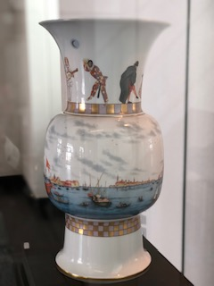
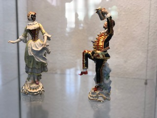
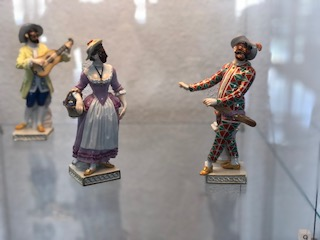
Weitere Fotos:
mainz-evangelisch-stadtkirchenarbeit.de/index/674
.........................................................................................................................
„Venezianische Karnevalskostüme und
Kostbarkeiten aus der Porzellan-Manufaktur Meissen bei uns in Mainz“
Doppelter "Augenschmaus" für ca. 200 Besucher
Einen Höhepunkt der 11teiligen Veranstaltungsreihe der Ev. Stadtkirchenarbeit Mainz „La Serenissima – Die Löwenrepublik - Kunst, Kultur, Kirche und Karneval in Venedig“ konnten am vergangenen Sonntag, dem 26. Mai um 15.00 Uhr ca. 200 Besucher im ansprechenden Ambiente (Forum und Arkade) des Landesmuseums Mainz miterleben.
Nach einem kurzen Willkommen von Frau Ursula Wallbrecher - in Vertretung der kurzfristig erkrankten Direktorin des Landesmuseums Mainz Frau Dr. Birgit Heide - führte Pfarrer Rainer Beier als Verantwortlicher des Gesamtprojektes - im venezianischen Kostüm mit Maske - in das Programm dieser eindrücklichen Veranstaltung ein:
die Vorstellung der venezianischen "Masken" / Kostüme - "umrahmt" mit den Kostbarkeiten aus Porzellan, den Figuren der "Commedia dellárte"( z.B. Harlekin, Columbine, Pantalone) und weiteren Exponaten ( z.B. einer über 40 cm hohen Vase allein mit einem Versicherungswert von 50 000 Euro )
als exklusive Leihgabe aus der Staatlichen Porzellanmanufaktur Meissen.
Er gedachte dabei auch ausdrücklich der leider bereits verstorbenen Künstlerin und creativen Schöpferin sämtlicher
- teils in Venedig ausgezeichneten - Kostüme: Frau Rosie Purper.
Der Schirmherr und Förderer des Gesamtprojektes Herr Peter Krawietz, Kulturdezernent a.D. der Stadt Mainz und Vizepräsident
im Bund Deutscher Karneval, würdigte die Veranstaltung als eindrücklichen Teil der Venedig-Gesamtveranstaltung - zugleich auch als weiteres Beispiel des kulturellen Wirkens von Pfr. Beier über viele Jahre für die Stadt Mainz - jetzt in seinem letzten Dienstjahr.
Herr Krawietz und Pfr. Beier sind über viele Jahre in ökumenisch-brüderlichem Geist freundschaftlich verbunden.
Gregor Purper und Ulrike Krassnik übernahmen die Moderation der Präsentation der "Kostüme",
die von Tänzerinnen der Showtanzgruppe „Fantasy“ des TSV Schott unter der Leitung von Karin Carra vorgeführt wurden.
Herr Purper kommentierte nach seiner allgemeinen Einführung in die Tradition des Venezianischen Karnevals
in kenntnisreichen Ausführungen die besondere Bedeutung der einzelnen 18 "Masken" bzw. "Masken-Gruppen".
Die Präsentation begann mit den Bildmotiven "Glaube, Hoffnung, Liebe" und
endete mit der Figur des "Friedens" in der Gestalt einer gold-weißen Taube (vom Markusplatz) - getragen von Frau Krassnik selbst.
Die 18 jungen Damen der Showtanzgruppe "Fantasy" des TSV Schott Mainz faszinierten die Besucher in ihren fantasievollen Kostümen mit ihren "ruhig-schwebenden Bewegungen", den eindrücklichen Blicken durch die bewegungslosen weißen Masken und ihren kleinen kreativen "Szenen" - erzählt ohne ein gesprochenes Wort.
Die Besucher waren wirklich begeistert. Eine Dame fasste Ihre Reaktion mit dem Satz zusammen: "Ich empfinde, ich bin in einem Traum".
Projekt-Homepage: www.mainz-evangelisch-stadtkirchenarbeit.de/index/664
...............................
Vortrag
„Glaubensfragen – Eine evangelische Orientierung“
Religion ist heute zu einem Service unter vielen geworden, auch das Christentum, das von Seelenmassage bis zu Streicheleinheiten vieles im Angebot hat. Aber was macht den Kern des christlichen Glaubens aus? Wolfgang Huber entdeckt ihn mit Martin Luther in der Botschaft des Evangeliums. So beginnt seine "evangelische Orientierung" mit der Frage nach den biblischen Quellen des Glaubens. Von hier aus erschließt er in einem souveränen Überblick die wesentlichen Elemente der Lehre von Glaube, Liebe und Hoffnung. Er berücksichtigt dabei die christlichen Traditionen, beschreibt ihre Transformationen durch Reformation und Aufklärung und erörtert die aktuellen gesellschaftspolitischen Herausforderungen für freie und verantwortliche Christen.
(Klappentext des gleichnamigen Buches von Bischof Huber)
Die Evangelische Stadtkirchenarbeit Mainz ( Verantwortungsbereich Pfr. Rainer Beier ) lädt ein zu einem
Referent:
Bischof Wolfgang Huber
Ehem. Ratsvorsitzender der EKD ( Ev. Kirche Deutschland), Prof. Dr. Dr.h.c.mult.
mit anschließender Gesprächsrunde
Moderator:
Pfarrer Rainer Beier
Sonntag, 19. Mai 2019
18.15 Uhr - Ev. Christuskirche Mainz
Eintritt frei - Wir freuen uns über eine Spende.
.............................................................................
Mit freundlicher Empfehlung und den besten Grüßen von
Herrn Generalkonsul der italienischen Republik Italien
MASSIMO DARCHINI
und der
Dezernatsleiterin der Kulturabteilung der Italienischen Botschaft in Stuttgart
Dott.ssa CRISTINA RIZZOTTI
Vortrag
"Der Karneval in Venedig - einst und jetzt"
Dr. Arnold E. Maurer, Bonn
am Dienstag, 14. Mai um 18 Uhr im Landesmuseum Mainz
auf Vorschlag und mit freundlicher Unterstützung der
Kulturabteilung der Italienischen Botschaft, Stuttgart / Istituto Italiano di Cultura, Stoccarda
Dankeschön!
........................................................................................................................
Konzert:
"Venezianische Kirchenmusik von Claudio Monteverdi"
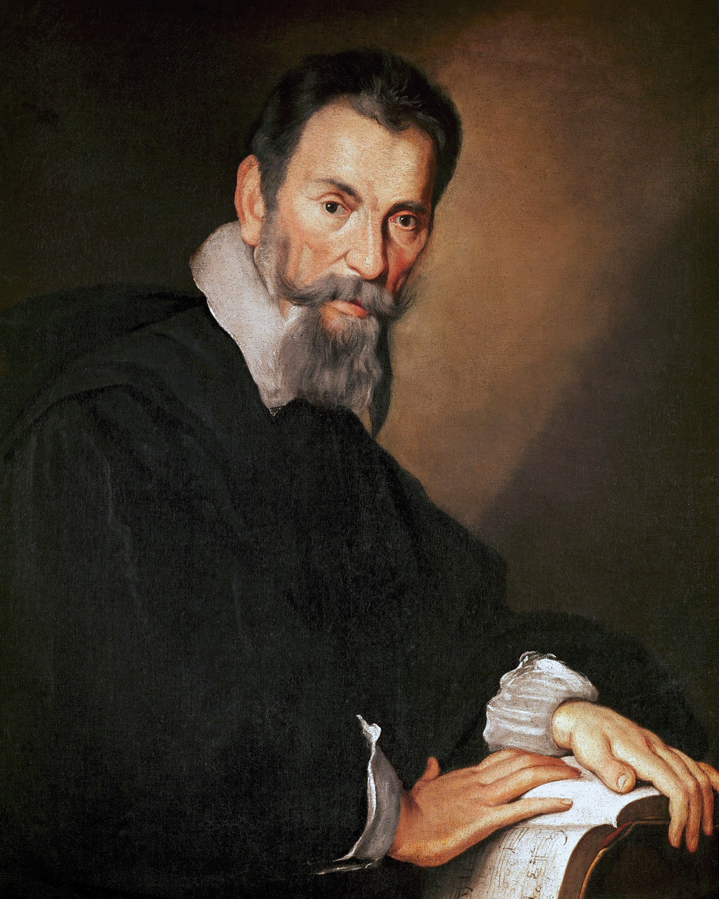
Vokal- und Instrumentalsolisten, Orchester und Johannis-Kantorei Mainz
unter der Leitung von Kantor Volker Ellenberger
in der St. Johannis-Kirche, Mainz - am Sonntag, dem 12. Mai um 20 Uhr
Das Konzert ist Teil des SKA-Projektes
"La Serenissima - die Löwenrepublik
Kunst, Kultur, Kirche und Kanelval in Venedig"
..........................................................................................................................
Unglaublich - aber wahr
und dabei überaus erfreulich:
in der kommenden Woche wird es an 2 Tagen 3 Kircheneintritte geben.
Schon jetzt: Herzlich willkommen in der Evangelischen Kirche !
..................................................................................................................................................
Ein Meistervortrag im Städel-Museum Frankfurt
"Tizian - und die Renaissance in Venedig"
zum "Wahnsinnspreis" von nur 3 (!) Euro war die maximale Teilnehmenden-Zahl von 25 Personen erreicht.
Auch wenn in der SKA-Homepage dies längst bekannt gemacht worden war, haben sich
sich immer wieder Personen um einen Platz bemüht - bis hin zum Führungstag.
Der Evangelische Stadtkirchenpfarrer für Museumsarbeit in Frankfurt Pfarrer David Schnell
konnte mit einer - immerhin - 2-stündigen Führung die aufmerksamen Gruppenmitglieder
fesseln. Er zeigte diverse Aspekte u.a. von Theologie, Kunstgeschichte und Bilddeutung, Venedig-Geschichte
in einem lebendigen und anschaulichen Vortrag auf. Pfr. Beier würdigte in seinem Dank an den
Referenten seine Arbeit als "hervorragend". Mit diesem Begriff hatte er auch während des Vortrags immer
wieder die Bewertung der Gruppenmitglieder gehört.
Eine tolle 2. Veranstaltung in der 11-teiligen Veranstaltungsreihe der Ev. Stadtkirchenarbeit
"La Serenissima - die Löwenrepublik
Kunst, Kultur, Kirche und Karneval in Venedig"
Toller Start mit über 100 hocherfreuten Besuchern -
eindrücklichen Textbeiträgen und virtuoser Streichermusik
Am Sonntag,dem 14. April begann um 15 Uhr
mit der 1. Veranstaltung von "beziehungsWeise" die 11-teilige Reihe
"La Serenissima" / Venedig-Projekt.
im Landesmuseum Mainz.
Besonderheit am 14. April:
Der Besuch eines ganz besonderen Gastes aus Venedig:
Er arbeitete zur Zeit des zu betrachtenden Gemäldes von Giovanni Richter "Lagunenfahrt in Venedig" im 18. Jahrhundert dort.
Auf besonderen Wunsch von Pfarrer Beier war er Anfang des Monats April 2019 noch einmal in Venedig.
Er berichtete ganz persönlich über diese stolze Stadt, ihre Kirchen / Geschichte,
ihre Kultur, ihre Bedeutung damals .. und heute.
Frau Ursula Wallbrecher M.A. vom Landesmuseum Mainz trug den kunsthistorischen Impuls
und
Prof. Benjamin Bergmann
und seine Meisterschüler mit Musik von Antonio Vivaldi und Niccolo Paganini
haben die musikalische Impulse gesetzt
*
Die Broschüre zum SKA-Projekt:
La Serenissima - Die Löwenrepublik
Kunst - Kultur - Kirche und Karneval in Venedig
ist da.
Wir finden: sie ist toll geworden.
Besonderen Dank an die Grafikerin Petra Minn
und alle beteiligten Text- und Bildlieferanten.
Hier nachfolgend die Verlinkmöglichkeit auf die
Projekt-Seite mit der kompletten Datei zu Ihrer persönlichen Einsicht.
Dafür einfach die nachfolgende Grafik anklicken.
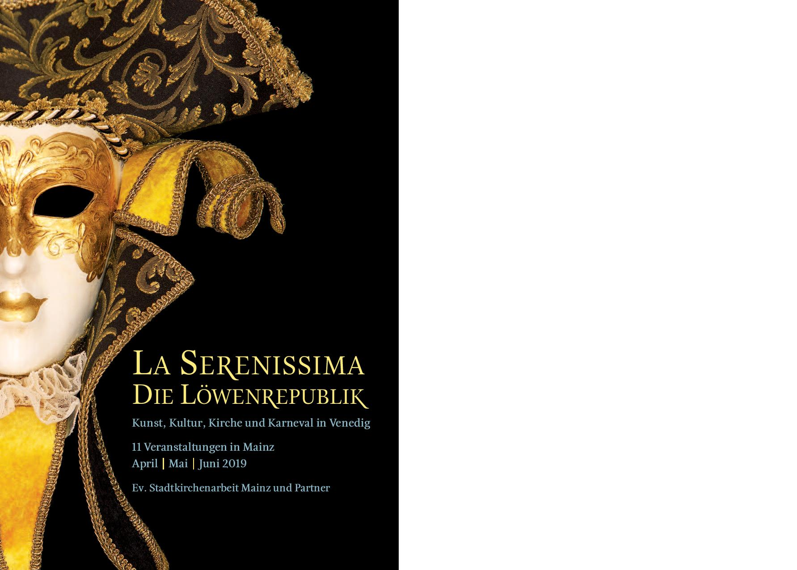
ACHTUNG!
Die Führung im Städel-Museum ist bereits ausgebucht.
............................................................................................................
Bischof Huber kommt zu uns nach Mainz

"Glaubensfragen - Eine evangelische Orientierung"
"Religion ist heute zu einem Service unter vielen geworden, auch das Christentum, das von Seelenmassage bis zu Streicheleinheiten vieles im Angebot hat. Aber was macht den Kern des christlichen Glaubens aus? Wolfgang Huber entdeckt ihn mit Martin Luther in der Botschaft des Evangeliums. So beginnt seine "evangelische Orientierung" mit der Frage nach den biblischen Quellen des Glaubens. Von hier aus erschließt er in einem souveränen Überblick die wesentlichen Elemente der Lehre von Glaube, Liebe und Hoffnung. Er berücksichtigt dabei die christlichen Traditionen, beschreibt ihre Transformationen durch Reformation und Aufklärung und erörtert die aktuellen gesellschaftspolitischen Herausforderungen für freie und verantwortliche Christen.“
Bischof Huber ( Klappentext seines Buches)
Die Evangelische Stadtkirchenarbeit Mainz lädt Sie
zu einem Vortragsabend zu diesem Thema herzlich ein mit
Alt-Bischof Wolfgang Huber
Ehem. Ratsvorsitzender der EKD ( Ev. Kirche Deutschland), Prof. Dr. Dr. h.c. mult.
mit anschließender Gesprächsrunde
Sonntag, 19. Mai 2019
18.15 Uhr - Ev. Christuskirche Mainz
*
Basis seines Vortrags ist sein Buch:
„Glaubensfragen – Eine evangelische Orientierung“
C.H. Beck Verlag, 2017
Eintritt frei - Wir freuen uns über eine Spende
Vorbereitend laden wir lange vorher ein zu einer:
Einführung in dieses grundlegende Werk und in den Mainzer Vortrag
Pfr. Rainer Beier + Pfr. Dr. Gerhard Dietrich
“Raum Erfurt“ im Haus der Ev. Kirche
Kaiserstraße 37 / 4. OG , 55 116 Mainz
Termin: 26. März 2019 - 18.15 Uhr
*
"GOTT loben, das ist unser Amt"
David Denecke textete 1646 (nach Cornelius Becker 1602) in Anlehnung an Psalm 100, die Verse 1-5 eines der
beliebtesten Choräle im Evangelischen Gesangbuch (EG 288).
Nun jauchzt dem Herren alle Welt!
1) Nun jauchzt dem Herren alle Welt!
Kommt her, zu seinem Dienst euch stellt,
kommt mit Frohlocken, säumet nicht,
kommt vor sein heilig Angesicht.
2) Erkennt, dass Gott ist unser Herr,
der uns erschaffen ihm zur Ehr,
und nicht wir selbst: durch Gottes Gnad
ein jeder Mensch sein Leben hat.
3) Wie reich hat uns der Herr bedacht,
der uns zu seinem Volk gemacht;
als guter Hirt ist er bereit,
zu führen uns auf seine Weid.
4) Die ihr nun wollet bei ihm sein,
kommt, geht zu seinen Toren ein
mit Loben durch der Psalmen Klang,
zu seinem Vorhof mit Gesang.
5) Dankt unserm Gott, lobsinget ihm,
rühmt seinen Namen mit lauter Stimm;
lobsingt und danket allesamt.
Gott loben, das ist unser Amt.
Am Sonntag, dem 27. Januar 2019
musizierte der Mainzer Bachchor unter der Leitung von Prof. Ralf Otto
im Universitäts-Gottesdienst in der Mainzer Christuskirche - Beginn um 11.15 Uhr
die Motette von Johann Sebstian Bach
"SINGET DEM HERRN".
Dieses eindrückliche doppelchörige Werk (BWV 225) gehört zu den Höhepunkten der Geistlichen Musik überhaupt.
Diese Musik wird der Aufgabenstellung "GOTT zu loben" in ganz besonderer Weise gerecht.
In einer Verbindung von musikalischer Virtuosität des Vortrags und transparenter Gestaltung der kompositorischen
Absichten des Komponisten durch die Ausführenden in der Interpretation und unter Leitung von
Prof. Ralf Otto wurde dieses Werk ein eindrückliches Gotteslob und diente auch der "Recreation des Gemüts"
der Gottesdienstteilnehmenden - und der Muszierenden.
..............................................................................................................................................................
VORAUSSCHAU:
2019 - Das "Finale Jahr" von Pfarrer Rainer Beier
Im letzten Dienstjahr von Pfr. Beier stehen insbesondere 2 mehrteilige Schwerpunkt-Projekte im Vordergrund:
1.
"Serenissima - die Löwenrepublik
Kunst, Kultur, Kirche und Karneval in Venedig"
in der 1. Jahreshälfte. Alle Informationen zum Vorhaben ( einfach anklicken ):
mainz-evangelisch-stadtkirchenarbeit.de/index/664
und
2.
"Angelus & Diabolus"
ab den Sommerferien bis Ende Oktober. Alle Informationen zum Vorhaben (einfach anklicken ):
mainz-evangelisch-stadtkirchenarbeit.de/index/670
Hinzu kommen u.a. noch 2 sehr interessante Einzel-Vorträge
* Bischof Prof. Dr. Dr. h.c. Wolfgang Huber
„Glaubensfragen – Eine evangelische Orientierung“
und
Prof. Dr. Fulbert Steffensky
"Was bleibt, stiften die Liebenden"
*
Auch der Dienst in der Dekanats-Kircheneintrittsstelle
oder die Teilnahmen an der Hochzeits-Messe
gehören - weiter - in das Aufgabenfeld von Pfarrer Beier
und seinem Mitarbeiter Dipl.Theol. Christian Jansen
und - je nach Anlaß - weiteren Mitarbeitenden.
.............
RCKSCHAU
Gottesdienste und Geistliche Impulse
Jahreswechsel 2018 / 2019
im Mainzer St. Martins-Dom
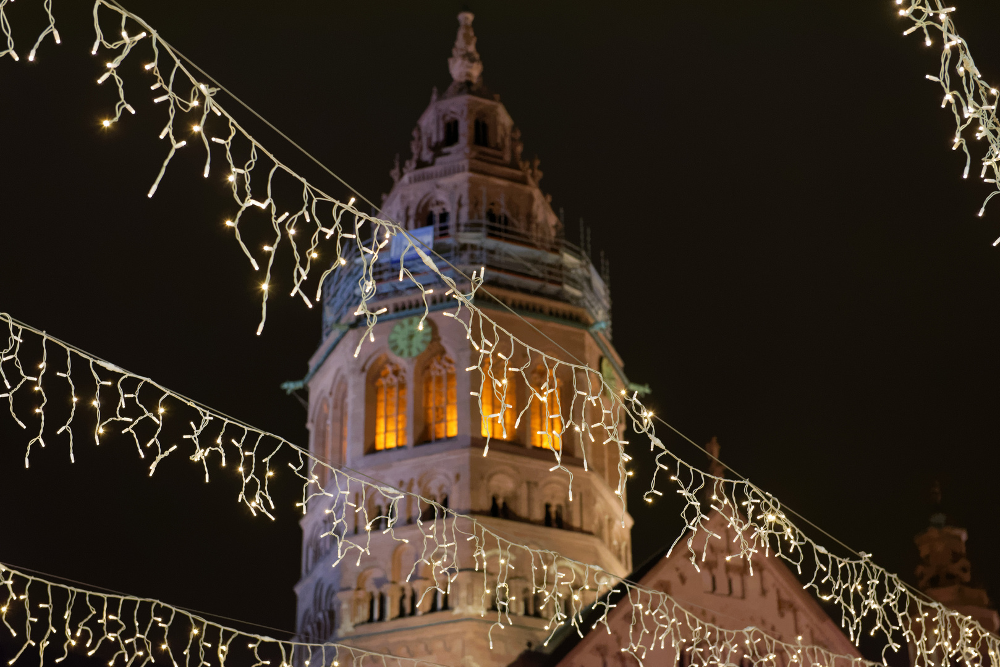
ab 20.00 Uhr "Offener Dom" mit Impulsen
zu jeder vollen Stunde - ÖKUMENISCH
u.a.
23.00 Uhr „…und vergiss nicht, was GOTT dir
Gutes getan hat“ (Psalm 103 - Jesu Lieblings-Psalm),
anschließend:
Möglichkeit zur
persönlichen Segnung für Einzelne oder Paare
Pfarrer Rainer Beier
Evangelische Stadtkirchenarbeit Mainz
Domorganist
Prof. Daniel Beckmann

Foto: (c) Gotthard Beier
23.45 Uhr Ökumenischer Abschluss
Dekan Andreas Klodt
Evangelisches Dekanat
Dekan Markus Kölzer
Katholisches Dekanat
Musikalische Gestaltung:
Domorganist Prof. Daniel Beckmann
Veranstalter:
Bischöfliches Domkapitel, Bischofsplatz 2, 55116 Mainz
Evangelisches Dekanat Mainz, Kaiserstr. 37, 55116 Mainz
Katholisches Dekanat Mainz, Pfaffengasse 4, 55116 Mainz
................................................................................................
Erfreulicher Rückblick:
"Hinter Türen leuchten" 2018
"der etwas andere Stadtgang" im Advent
in der Mainzer Innenstadt -
40 Interessierte waren mit dabei

(C) Manfred Hahnefeld - Dankeschön.
v.l.n.r.: Pfarrer Beier und Pfarrer Ziorkewicz vor dem Start
nach 14 Jahren letztmalig mit Pfarrer Rainer Beier,
der diese Veranstaltung seit Anfang an
mitplante und durchführte.
Meldung der Ev. Öffentlichkeitsarbeit dazu
Reliquie des Heiligen Quintin und Stadtschreiber-Geheimnisse
Adventsgang: Stadtkirchenpfarrer des Evangelischen Dekanats Mainz öffneten sonst verschlossene Türen in der Mainzer Innenstadt
Elf tiefe Glockenschläge des nahen Doms gaben das Startzeichen. Mit Liedblättern ausgestattet stimmten etwa 40 Personen vor der St. Johanniskirche, umringt vom geschäftigen Marktgeschehen, das Adventslied „Macht hoch die Tür“ an. Die Pfarrer Rainer Beier und Gregor Ziorkewicz leuchteten den Besuchern mit Flambeaus, brennenden Kerzenstäben, den Weg. Mit ihrem zweistündigen Stadtgang knüpften die Stadtkirchenpfarrer des Evangelischen Dekanats Mainz an die Tradition des Adventskalenders an und öffneten den Gästen üblicherweise verschlossene Türen in der Mainzer Innenstadt.
Erinnerung an Ökumenische Stadtgänge
Seit 14 Jahren gibt es diesen Stadtgang am Samstag vor dem 1. Advent. Jedes Jahr öffneten sich neue Türen zu kulturellen, politischen oder kirchlichen Themen. Die diesjährige erste Station, die katholische St. Quintins-Kirche, ist dem Heiligen Quintin, einem römischen Soldaten und Märtyrer, geweiht. Die Statue des Schutzpatrons der Gefangenen hat ihren Platz im barocken Hochaltar der gotischen Hallenkirche. Rainer Beier verband mit dem Besuch die Erinnerung an die ökumenischen Stadtgänge der ersten Jahre, die er gemeinsam mit katholischen Kolleginnen und Kollegen durchgeführt hatte.
Hinter der sonst für Besucher geschlossenen Tür der Sakristei öffnete Kirchenwächterin Lydia Makowski in dem Raum, der zur Vorbereitung des Priesters auf die Gottesdienste dient, Schränke mit Stolen und liturgischen Gewändern. Beier erläuterte die Farben der Paramente in der evangelischen Liturgie und wies auf Unterschiedlichkeiten der Talare hin. Abschließend öffnete die Kirchenwächterin noch eine ganz besondere Tür und offenbarte eine Reliquie des Heiligen Quintin.
In Wohnzimmer bei Anna Katharina Hahn
Als zweite Station öffnete sich die Wohnung der Mainzer Stadtschreiberin im Römischen Kaiser. Noch bis Februar wohnt Anna Katharina Hahn in diesem Renaissancebau, in dem die Verwaltung des Gutenbergmuseums untergebracht ist. Die Autorin des Romans „Das Kleid meiner Mutter“ erzählte den Gästen, die ihr Wohnzimmer mehr als ausfüllen, von ihren aktuellen Arbeiten, darunter das Filmprojekt „Tauben in den Städten“, das sie während ihrer Mainzer Zeit umgesetzt hat.
"Finale" im Innenraum der St. Johannis-Kirche, dem "Alten Dom" von Mainz
Nach kurzem Marsch öffneten sich die Baustellentüren der nicht öffentlich zugänglichen St. Johanniskirche. „Hier können wir ganz tief in die christliche Geschichte schauen“, sagte Ziorkewicz. Die einstige Kirche des Mainzer Bischofs Bonifatius sei eine der wichtigsten Kirchen in Europa gewesen. Mit der Weihe des heutigen Doms in 1036 sei die Reliquie des Heiligen Martin von Tours in den neuen Martinsdom überführt worden, erzählte Ziorkewicz. Der Alte Dom habe daraufhin das Patrozinium Johannes des Täufers erhalten. Ein Taufbecken sei bei den Grabungen und Untersuchungen der Archäologen und Bauforscher, die 2013 begannen, allerdings nicht gefunden worden.
Letzter Stadtgang mit Rainer Beier
Mit digitalem Glockengeläut und einem Segenswort von Hanns Dieter Hüsch verabschiedete sich Pfarrer Rainer Beier, der die Veranstaltung ein letztes Mal begleitete, da er Ende nächsten Jahres in Ruhestand gehen wird. Im kommenden Advent wird Ziorkewicz den Stadtgang, der stets an der Johanniskirche beginnt, federführend organisieren.

(C) Manfred Hahnefeld - Dankeschön
"Abschiedsworte" von "Hinter Türen leuchten" - Pfr. Rainer Beier
im Innenraum der St. Johannis-Kirche
..............................................................................................
Eindrückliche Bilder illustrierten die
überaus fachkundigen Ausführungen der Referentin,
die mit ihren Ausführungen nicht zuletzt zu den "Mainzer Totentänzen"
die ca. 30 Zuhörenden bewegte.
Fachvortrag
Der Tanz in den Tod
Totentänze von der Antike bis zur Gegenwart
Referentin:
Dr. Uli Wunderlich
DIE Expertin zur Thematik
Vorsitzende der
"Europäische Totentanz-Vereinigung"
Danses Macabres d'Europe, Bundesrepublik Deutschland e.V.
www.totentanz-online.de/totentanz.php
Termin
Dienstag, 27. November um 19.15 Uhr
(= Dienstag nach dem Toten- bzw. Ewigkeits-Sonntag und vor dem 1. Advent )
Ort
"Raum Erfurt" - im "Haus der Evangelischen Kirche" ( 4. Stock )
Kaiserstraße 37, 55 116 Mainz
*
Weitere Informationen:
Projekt-Homepage: www.mainz-evangelisch-stadtkirchenarbeit.de/index/671
......................................................................................................................................................................................................
Im Rückblick:
Ein überaus beeindruckender Film
vor überaus beeindruckten Besuchern
- auch vom Referenten des Abends:
dem Produzenten des Films
Mario Krebs

Foto: Mario Krebs beim Vortrag im Gemeindesaal Altmünster
(C) pfr.b
*
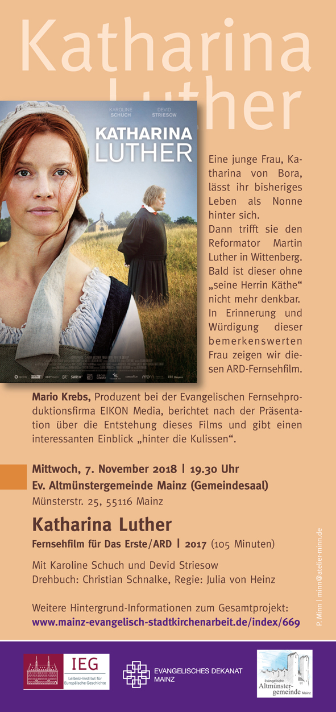
.............................................................................................................
Mit großer Freude darf ich anzeigen, daß
Herr Peter Krawietz,
Kulturdezernent d.D. der Landeshauptstadt Mainz und Vizepräsident Bund Deutscher Karneval
seine Bereitschaft erklärt hat,
die SCHIRMHERRSCHAFT über das Gesamt-Projekt
"Kunst, Kultur und Karneval in Venedig"
zu übernehmen.
Herzlichen Dank !
Pfarrer Rainer Beier
*
Projekt-Seite:
mainz-evangelisch-stadtkirchenarbeit.de/index/664
... einfach anklicken
......................................................................................................................
Für den Zusammenhang der aktuellen Fragen nach den geistigen Wurzeln von Europa bot die Evangelische Stadtkirchenarbeit Mainz
einen Basisvortrag zum Thema an. Pfr. Rainer Beier konnte den international renommierten Fachmann Prof. Dr. Dr. h.c. Rudolf Simek von der Universität Bonn
gewinnen. Er sprach darüber, wie sehr und in welchen Formen sich das vorrückende Christentum in Europa von germanischen Traditionen beeinflussen und prägen ließ.
"THOR gegen CHRISTUS -
Die Germanisierung des Christentums in Europa im Frühmittelalter
„Götterkämpfe“ wie die zwischen Thor und Christus und die mitunter sehr energische Verbreitung des Christentums durch skandinavische Könige erwecken auf den ersten Blick nicht den Eindruck, als sei der vorchristliche pagane Polytheismus der Germanen von irgendeinem Einfluss auf das in Europa von Süden nach Norden vorrückende Christentum gewesen. Vor dem Hintergrund der Bekehrungsgeschichte der Germanen soll aber hier die Frage beleuchtet werden, wie sehr und in welchen Formen die Übernahme des Christentums durch die Germanen die Vorstellungen und Institutionen des vorreformatorischen Christentums im europäischen Mittelalter selbst beeinflusst und verändert haben.
Vortrag
Prof. Dr. Dr. h.c. Rudolf Simek
Institut für Germanistik,
Vergleichende Literatur- und Kulturwissenschaften Abteilung für Skandinavistik
Universität Bonn
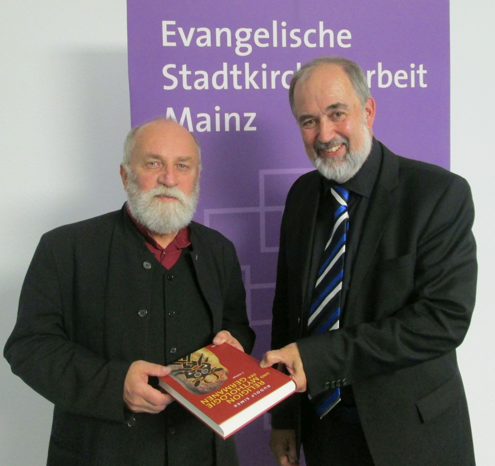
Informationen zum Referenten:
Von 1972 bis 1976 studierte Simek Germanistik, Philosophie und katholische Theologie. Im Jahr 1976 war er zunächst für kurze Zeit als Lehrer an einer Hauptschule tätig, ehe er an der University of Edinburgh sein erstes Lehramt an einer Hochschule antrat, das er bis 1979 ausführte. Nach der Promotion 1980 und dem Magister der Theologie 1981 in Wien, wo er sich 1990 habilitierte, leitete Simek bis 1995 die Fachbibliothek des dortigen germanistischen Instituts und war von 1981 bis 1989 als Dozent tätig. Die Dozentenstelle behielt er bis 1995. Von 1990 bis 1995 hatte Simek gleichzeitig eine Professur für Germanistik an der Katholischen Universität von Heiligenkreuz inne.
Seit 1995 ist er Professor und Lehrstuhlinhaber für Ältere Germanistik mit Einschluss des Nordischen an der Universität Bonn. 1999 erhielt er eine Professur für Vergleichende Religionswissenschaft an der Universität Tromsø, 2000 an der Universität Sydney für Altnordische Studien. Zu diesen ordentlichen Professuren kommen zahlreiche Gastprofessuren und Dozentenstellen an europäischen und außereuropäischen universitären Bildungsstätten. Längere Forschungsaufenthalte hatte er an den Hochschulen von Reykjavík, Kopenhagen, London, Oxford und Sydney. Von 2000 bis 2003 war Simek Vorsitzender der Internationalen-Saga-Gesellschaft.
Simek ist die direkte Vorlage für die Figur des „Professor Weissinger“ in Tommy Krappweis' Romantrilogie „Mara und der Feuerbringer“. In der gleichnamigen Verfilmung 2015 spielte Simek die Rolle des Lehrers Haase.
de.wikipedia.org/wiki/Rudolf_Simek
Mittwoch, 24. Oktober 2018
(ursprünglich: um 18.15 Uhr)
ACHTUNG
ANFANGSZEIT G E Ä N D E R T
auf:
19.30 Uhr
im Raum "Erfurt", Haus der Evangelischen Kirche,
Kaiserstr. 37 ( 4. Stock ) - 55 116 Mainz
.........................................................................................................................
Herzliche Einladung:
2 Veranstaltungen in Erinnerung und Würdigung von
Katharina von Bora - Katharina Luther
"Adlige - Nonne - Ehefrau Luthers - Witwe"
Mittwoch, 10.Oktober - 18.15 Uhr
Raum "Erfurt" - Haus der Evangelischen Kirche - Kaiserstraße 37 / 4.OG (mit Aufzug)
"Lutherin“ bleibt von Geheimnissen umwittert"
Dr. Sabine Kramer sprach im Evangelischen Dekanat Mainz
über die bedeutendste Frau der Wittenberger Reformation
Kompletter Text des Berichts von der Ev. Öffentlichkeitsarbeit
und weitere Informationen unter:
mainz-evangelisch-stadtkirchenarbeit.de/index/669

Baukasten
Weitere Informationen unter:
mainz-evangelisch-stadtkirchenarbeit.de/index/669
... einfach anklicken
.........................................................................................
"ALLE JAHRE WIEDER ..."
Evangelische Kirche war auch 2018 wieder auf der Hochzeitsmesse in Mainz präsent

Für alle, die sich trauen – wollen!
Evangelische Kirche
war für Sie persönlich da
am Stand 407 im Gutenbergsaal auf der Messe ´hochzeitplus!


Fotos (C) pfr.b.
„ansprech-Bar“
Informationen – Anregungen – Hilfen
• für die Planung und grundsätzliche Gestaltung
einer kirchlichen Trauung –
auch für konfessionsverschiedene und gleichgeschlechtliche Paare
• für Fragen bezüglich eines muslimischen, andersreligiösen oder
aus der Kirche ausgetretenen Partners
• Anregungen für Brautpaare, die ihre kirchliche Hochzeit selbst mitgestalten wollen.
In diesem Jahr 2018 mit anregendem:
„Hochzeits-Test“ !
Kostenloser TEST und danach (!) AUSWERTUNG. Am Stand 407 erhältlich. Nur Mut !
Evangelische Stadtkirchenarbeit Mainz / Evangelische Stadtkirchenarbeit an St. Johannis
Evangelisches Dekanat Mainz
Pfarrer Rainer Beier, Roland Pokorny, Pfarrer Gregor Ziorkewicz
* * * * * * * * * * * * * * * * * * * * * * * * * * * * * * * * * * *
......................................................................................................................
HERZLICHE EINLADUNG !
Fachvortrag
Der Tanz in den Tod
Totentänze von der Antike bis zur Gegenwart


Referentin:
Dr. Uli Wunderlich
DIE Expertin zur Thematik
Vorsitzende der
"Europäische Totentanz-Vereinigung"
Danses Macabres d'Europe, Bundesrepublik Deutschland e.V.
www.totentanz-online.de/totentanz.php
Termin
Dienstag, 27. November; 19.15 Uhr
(= Dienstag nach dem Toten- bzw. Ewigkeits-Sonntag und vor dem 1. Advent )
Ort
"Raum Erfurt" - im "Haus der Evangelischen Kirche" ( 4. Stock )
Kaiserstraße 37
55 116 Mainz
*
Weitere Informationen:
www.mainz-evangelisch-stadtkirchenarbeit.de/index/671
*

........................................................................................................................
Wir freuen uns aktuell über:
In jeder Woche einen Kircheneintritt in die Evangelische Kirche
allein bei uns (Kircheneintrittsstelle Ev. Stadtkirchenarbeit Mainz)
bereits mehrere Wochen lang - bis jetzt (15. November 2018)
Herzlich willkommen!
( Alle Informationen zu diesem so wichtigen und
doch zugleich vom "Verfahren" her gesehen so einfachen Schritt
finden Sie auf der Seite: mainz-evangelisch-stadtkirchenarbeit.de/index/429.)
Auf Ihren Wunsch hin informieren und begleiten wir gerne auch Sie auf diesem Weg
.......................................................................................................
14 Porzellan-Figuren "Commedia dell`Arte"
und weitere Kostbarkeiten aus Meissen zugesagt
für unser Projekt
"Kunst, Kultur und Karneval in Venedig" (2019)
Im überaus freundlichen und konstruktiven Gespräch in Meissen mit Herrn Stachos und Frau Frau Sparenberg von der
dortigen weltberühmtenPorzellanmanufaktor konnten wir uns verständigen auf das zur Verfügung Stellen von 14 Figuren aus der
Serie "Commedia dell`Arte" (u.a. Harlekin, Pulcinella, Pantalone ) sowie weiterer exklusiver Kostbarkeiten
(z.B. eine 48 cm hohe Vase mit "Venezianischen Impressionen" in einer 360-Grad-Panorama-Malerei).
Das ist sicherlich ein Höhepunkt im Gesamt-Projekt.
In der Reihe "beziehungsWeise" werden wir darauf Bezug nehmen.
Und Herr Prof. Scholler, Uni. Mainz referiert in seinem Fachvortrag zur Thematik "Commedia dell `Arte".
Weitere Informationen auf der Projekt-Sonderseite:
mainz-evangelisch-stadtkirchenarbeit.de/index/664 (= einfach anklicken)
..............................................................................................
"beziehungsWeise 2018"
"Der Schutzengel"
Gemälde von Josef Karl Stieler
am Sonntag,
dem 1. Juli 2018
Beginn: 15 Uhr
Landesmuseum Mainz
ACHTUNG:
Wer Panik vor Schlangen hat, sollte sich bei dieser Veranstaltung nicht
in die ersten beiden Reihen setzten!
Denn im Beitrag von Pfr. Beier war auch ein
"DIALOG mit einer SCHLANGE" integriert.
Auch in diesem Jahr wurde diese beliebte 3-teilige Veranstaltungsreihe im Landesmuseum Mainz angeboten.
3 ausgewählte Exponate wurden betrachtet - aus unterschiedlichen Perspektiven:
KUNST - RELIGION - MUSIK.
Die IMPULSE:
Kunsthistorischer Impuls:
Ursula Wallbrecher M.A.,
Landesmuseum Mainz
Theologischer Impuls
Pfarrer Rainer Beier
Evangelische Stadtkirchenarbeit Mainz
Ev. Dekanat Mainz
Musikalischer Impuls:
Prof. Benjamin Bergmann
und seine Meisterschüler
Hochschule für Musik Mainz

Foto "durch" die Mitglieder des Streichquartetts in die Hälfte des zahlreichen Publikums
( insgesamt über 100 Besucher und Beteiligte )
*
Eine exklusive Präsentation war die Betrachtung eines Originalgemäldes
aus Privatbesitz
von einem der wichtigsten Künstler der Romantik:
Caspar David Friedrich
"Boddenlandschaft"
am Pfingstsonntag um 15 Uhr.
Dazu konnten wir auch einen ganz besonderen Gast begrüßen:
Pfarrer Prof. Dr. Ludwig Gotthard Kosegarten aus Rügen,
geboren am 1. Februar 1758.

(c) pfr.b
Caspar David Friedrich exklusiv im Landesmuseum Mainz erleben
Rund 70 Personen nahmen die Gelegenheit wahr, am Pfingstsonntag-Nachmittag das Gemälde "Boddenlandschaft" dieses renommierten Künstlers der
deutschen Romantik zu betrachten. Da das vorgestellte Exponat aus Privatbesitz nur für diese Veranstaltung zur Verfügung gestellt wurde,
war dies eine einmalige Möglichkeit. Die Begeisterung der Vortragenden in Wort und Musik übertrug sich
wie ein Funke auf die Zuhörerschaft. Ein Streichquartett mit MeisterschülerInnen von Prof. Benjamin Bergmann,
Hochschule für Musik Mainz, legte mit Kompositionen von Felix Mendelssohn-Bartholdy musikalisch die romantische Grundlage.
Frau Ursula Wallbrecher vom Landesmuseum Mainz erläuterte die wichtigsten Stationen der Lebensgeschichte Friedrichs.
Dazu gehören nicht zuletzt seine ihn prägenden Erfahrungen mit dem Tod, z.B. seines Bruders bei einem
Rettungsversuch des Künstlers als Kinder. Diese Todes-Motivik spiegelt sich auch in vielen seiner Werke wieder.
Prof. Benjamin Bergmann zeigte am ausgestellten Exponat detailiert die künstlerische Arbeitsweise Friedrichs
z.B. in der reichen Symbolik der einzelnen Gemäldedetails auf. Er überraschte immer wieder mit der tiefsinnigen Deutung von vermeintlich
nebensächtlichen Einzelheiten z.B. einem kleinen Lotsenboot verbunden mit dem großen "Lebensschiff", das wohl noch nicht selber weiß,
wohin die weitere "Lebensreise" des im Gemälde im Bildvordergrund dargestellten Paares gehen soll.
Als Überraschungsgast aus "Anderland" wies Pfarrer Ludwig, Gotthard Kosegarten als Zeitgenosse und Freund Friedrichs
im historischen Gewand auf die theologischen Hintergründe von Friedrichs Werk hin. Insbesondere das Motiv
der Unendlichkeit, konkret in der Betrachtung des Universum, findet sich immer wieder in den Arbeiten Friedrichs, z.B. in der Darstellung von Meer und Himmel.
Pfarrer Rainer Beier, Ev. Stadtkirchenarbeit Mainz, der für diesen Nachmittag in diese Rolle geschlüpft war, erläuterte diese religiöse Sichtweise an Texten
des damaligen "Kirchenvaters" Friedrich Schleiermacher. Kosegarten hatte in seiner Zeit die Möglichkeit der Suche und des Entdeckens des Schöpfers
in den Elementen der Schöpfung konkret an Beispielen der Natur auf der Insel Rügen bei seinen "Uferpredigten" seiner Gemeinde aufgezeigt.
Neben dem Reichtum der in dieser Veranstaltung gehörten Eindrücke, konnte jeder Gast noch hochwertige Reproduktionen vom Gemälde und seinen Einzelheiten,
sowie Hintergrund-Informationen zu den Zeitgenossen Friedrichs mit nach Hause nehmen.
FOTO:
(c) Pfarrer Rainer Beier
v.l. Prof. Benjamin Bergmann, Hochschule für Musik Mainz; Ursula Wallbrecher, Landesmuseum Mainz,
Pfr. Ludwig, Gotthard Kosegarten alias Pfarrer Rainer Beier, Evangelische Stadtkirchenarbeit Mainz
.........................................................................................................................
Der Projekt-Flyer liegt bereits in den Ev. Kirchengemeinden des Ev. Dekanates Mainz aus
und ist auch - nach telefonischer Absprache - im Büro der Ev. Stadtkirchenarbeit Mainz erhältlich
Auch im Landesmuseum Mainz sind an der Kasse Exemplare kostenlos für Sie verfügbar.
Diese Reihe begann 2018 am Sonntag, den 29. April um 15 Uhr
"Thorvaldsen in seinem Atelier"
von Eduard von Heuss
(Thorvaldsen ist der Künstler des Gutenberg-Denkmals in Mainz)
................................................................................................
GOTT
sei Dank für
Karl Kardinal Lehmann
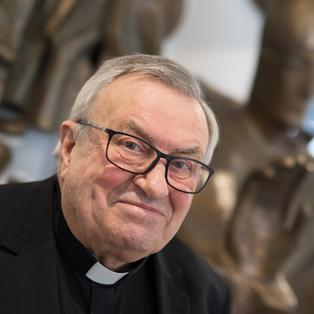
mit herzlichem Dank für alle Begegnungen und Kooperationen
mit ihm in segensreichem ökumenischen Geist.
Möge er gut heimkommen
bei GOTT unserem himmlischen Vater
In Traurigkeit
Pfarrer Rainer Beier
Dipl. Theol. Christian Jansen
.........................................................................................................................
"Europa-Projekt"
des Ev. Dekanates Mainz
im Jahr 2018
Mehrere Einrichtungen des Ev. Dekanates Mainz
bieten ganz unterschiedliche Veranstaltungsangebote zu dieser Thematik an.
Die GESAMTÜBERSICHT finden Sie als pdf der Programmbroschüre auf:
www.mainz-evangelisch.de
Pfarrer Rainer Beier
bietet 3 Veranstaltungen zum Themenaspekt:
die WURZELN Europas an:
(1)
"TE DEUM" - HERR GOTT, wir loben DICH.
Das Europa mitstiftende Erbe der Zisterzienser – heute auch in Evangelischer Verantwortung
„Ein radikaler Neubeginn stand am Anfang: Abkehr von Pomp und Prunk der Kirche Roms. Rückkehr zum authentischen Christentum sowie Demut vor der Schöpfung. Ihre Askese zeigt sich auch in ihrer Architektur der Romanik und Gotik. Auch heute sehen sie sich als Bewahrer christlicher Mystik, die in ihrem Orden auf eine lange Tradition zurück blickt.“ Mit diesen – teilweise fast reformatorisch klingenden - Worten charakterisiert die DVD-Dokumentation „Te Deum – ein Leben für Gott und die Menschen“ : die Zisterzienser. Dieser Filmbeitrag steht im Mittelpunkt der 1 Veranstaltung dieses zweiteiligen Projektes. In seiner Einführung beleuchtet Pfarrer Rainer Beier u.a. auch die positive Würdigung Martin Luthers von Bernhard von Clairvaux, einem der „Gründerväter“ dieses Ordens, der ein „Mahnschreieben“ an den Papst verfaßte, sowie Luthers eigene Position zum Mönchtum Die Zisterzienser sind wichtige religiöse Botschafter und Kulturträger von besonderem Rang in der Perspektive des „Europa der Klöster“. Eine Vielzahl der Zisterzienser Klöster gehört heute in die Verantwortung der so genannten „Evangelischen Erben“. Diese Vereinigung trifft sich vom 22. bis 25. April 2018 zu ihrer Jahrestagung im Kloster Arnsburg bei Lich (www.kloster-arnsburg.de) In Absprache mit der Leitung ist eine Teilnahme von Gästen gerne möglich. Beim 1. Informations- und Anmeldeabend werden die entsprechenden Absprachen (z. B. Fahrgemeinschaften) abgestimmt.
1. Treffen mit Einführung, Film und Absprachen im Raum "Erfurt" , Haus der Evangelischen Kirche, Kaiserstr. 37 (4.OG ) - 55 116 Mainz
Mittwoch, 7.März 2018 um 18.15 Uhr
und
2. Individuell frei ausgewählte Teilnahme an der Jahrestagung der „Evangelischen Zisterziensererben“ im Kloster Arnsburg (www.evangelische-zisterzienser-erben.de/)
Sonntag, 22. bis 25. April 2018
Pressebericht von Frau Dr. Weisheit Zenz - vom Veranstaltungsabend
„Te Deum - Herr Gott, wir loben dich“
Blick auf geschichtliche Wurzeln und das Erbe der Zisterzienser
„Te Deum - Herr Gott, wir loben dich“, in diesem Zeichen stand der Abend im Haus der Kirche, der mit Gesang eröffnet wurde: „Laudate omnes gentes“ erklang zur Einstimmung. Das Lied stammt aus Taizé, als bekanntes Beispiel für geistig gemeinschaftliches Leben, das noch heute eine große Faszination ausübt auf Besucher aller Generationen. Ebenso gelten die Zisterzienser als religiöse Botschafter und Kulturträger von besonderem Rang, wie ein Film veranschaulichte. Zuvor weitete Stadtkirchenpfarrer Rainer Beier kenntnisreich den Blick, mit Auszügen aus der Bibel. Als zentrale Passagen im Neuen Testament gelten die Geschichten vom reichen Jüngling, der seinen Besitz nicht aufgeben möchte, und von der Versuchung Jesus in der Wüste. „Sie wurde als Ort der Auseinandersetzung und Entscheidung angesehen, auch über die Jahrhunderte hinweg“, verdeutlichte der Referent anhand von Beispielen für eremitisches Leben dort. ...
Den kompletten Text finden Sie unter:mainz-evangelisch-stadtkirchenarbeit.de/index/667
"Woher wir kommen – wer wir sind“
II) Vortragsteil Stefan Brauburger: „Was uns eint – was uns trennt“
(vgl. Begleitbuch: Seiten 83 ff.)
Literatur-Hinweis:
"Die Europa Saga - woher wir kommen - Was uns eint - wohin wir wollen"
Peter Arens und Stefan Brauburger
C. Bertelsmann Verlag, München inm der Random House GmbH
Neumarkter Straße 28, 81673, 2017
ISBN: 978-3-570-10307-4
Film- und Gesprächsabend zur „Europa-Saga“ mit Stefan Brauburger
Mainz. „Woher wir kommen. Was uns eint. Wohin wir wollen“: Im Zeichen dieser zentralen Fragen stand ein informativer Film- und Vortragsabend mit Stefan Brauburger im Haus der evangelischen Kirche. Die Basis bildete ein Dokumentarfilm seiner Reihe „Europa-Saga“. Einen weiten Bogen – von der Entstehungszeit Europas vor 135 Millionen Jahren bis in die Gegenwart und Zukunft – spannte die Veranstaltung, zu der Stadtkirchenpfarrer Rainer Beier viele interessierte Zuhörer begrüßen konnte. Passend zum Jahresthema im Dekanat wurde das historische Querschnittsthema zunächst im Film betrachtet und dann in der Runde diskutiert....
Den kompletten Text finden Sie hier:
mainz-evangelisch-stadtkirchenarbeit.de/index/668
....................................
(3)
"THOR gegen CHRISTUS -
Die Germanisierung des Christentums in Europa im Frühmittelalter
„Götterkämpfe“ wie die zwischen Thor und Christus und die mitunter sehr energische Verbreitung des Christentums durch skandinavische Könige erwecken auf den ersten Blick nicht den Eindruck, als sei der vorchristliche pagane Polytheismus der Germanen von irgendeinem Einfluss auf das in Europa von Süden nach Norden vorrückende Christentum gewesen. Vor dem Hintergrund der Bekehrungsgeschichte der Germanen soll aber hier die Frage beleuchtet werden, wie sehr und in welchen Formen die Übernahme des Christentums durch die Germanen die Vorstellungen und Institutionen des vorreformatorischen Christentums im europäischen Mittelalter selbst beeinflusst und verändert haben.
Vortrag
Mittwoch, 24. Oktober 2018 um 18.15 Uhr
im Raum "Erfurt", Haus der Evangelischen Kirche, Kaiserstr. 37 ( 4. Stock ) - 55 116 Mainz
Prof. Dr. Dr. h.c. Rudolf Simek
Institut für Germanistik,
Vergleichende Literatur- und Kulturwissenschaften Abteilung für Skandinavistik
Universität Bonn
PROJEKT-SONDERSEITE www.mainz-evangelisch-stadtkirchenarbeit.de/index/660
........................................................................................................................
VORAUSSCHAU 2019
1. Für 2019 hat Bischof Prof. Dr. Dr.h.c. mult.
ehem. Ratsvorsitzender der EKD
WOLFGANG HUBER
Sonntag, 19 Mai 2019
„Glaubensfragen – Eine evangelische Orientierung“
"Religion ist heute zu einem Service unter vielen geworden, auch das Christentum, das von Seelenmassage bis zu Streicheleinheiten vieles im Angebot hat. Aber was macht den Kern des christlichen Glaubens aus? Wolfgang Huber entdeckt ihn mit Martin Luther in der Botschaft des Evangeliums. So beginnt seine "evangelische Orientierung" mit der Frage nach den biblischen Quellen des Glaubens. Von hier aus erschließt er in einem souveränen Überblick die wesentlichen Elemente der Lehre von Glaube, Liebe und Hoffnung. Er berücksichtigt dabei die christlichen Traditionen, beschreibt ihre Transformationen durch Reformation und Aufklärung und erörtert die aktuellen gesellschaftspolitischen Herausforderungen für freie und verantwortliche Christen."
( Klappentext seines Buches als Basis seines Vortrags
„Glaubensfragen – Eine evangelische Orientierung“
C.H. Beck Verlag, 2017)
Im Vorfeld des Vortrags wird eingeladen zu einer gemeinsamen Lektüre seines Buches.
Am Vortragsabend selbst gibt es eine Geprächsrunde mit Bischof Huber
zu den Anliegen seines im Buch dokumentierten Standpunktes.
Weitere Informationen: mainz-evangelisch-stadtkirchenarbeit.de/index/665
2. für 2019
MITTWOCH, 23. Oktober – 18.15 Uhr - Christuskirche Mainz
VORTRAG
Prof. Fulbert Steffensky
„Was bleibt stiften die Liebenden“.
................................................................................................................................
Pater Anselm Grün

Vortrag
"Jeder Mensch hat einen Engel"
30. Oktober 2019
in der Mainzer Christuskirche
Beginn: 18.15 Uhr
Jeder Mensch bekommt bei seiner Geburt einen Engel, der ihn begleitet durch alle Umwege und Irrwege, bis er ihn schließlich im Tod über die Schwelle in Gott hinein trägt. Im Vortrag wollen wir biblische Engelgeschichten anschauen, die uns zeigen wollen: Gott schickt seinen Engel in jede Not des Menschen hinein, in seine Einsamkeit, in seine Gefährdungen und in seine Angst. Der Engel bringt uns Gottes heilende und befreiende Kraft, damit wir in allen Situationen unseres Lebens neue Hoffnung schöpfen.
(Veröffentlichung von Pater Anselm Grün dazu:
Herder Verlag Freiburg ISBN 9783 45 104 8852)
HERZLICHE EINLADUNG
*
VOR diesem abschließenden Vortrag wird es eine
VERANSTALTUNGSREIHE zum Thema
"angelus & diabolus"
geben.
Weitere Informationen dazu demnächst hier auf dieser Homepage.
..............................................................................................................................
Mathildenhöhe Darmstadt
Otto Bartning hat die Kultur des Bauens im 20. Jahrhundert maßgeblich beeinflusst. Ab 1918 entwarf er als Mitglied im Arbeitsrat für Kunst Konzepte einer Studienreform, auf die sich Walter Gropius bei der Gründung des Bauhauses in Weimar stützte. Bartnings berühmter expressionistischer Entwurf der Sternkirche von 1922 sowie die 1928 ausgeführte Stahlkirche revolutionierten den evangelischen Kirchenbau. Nach 1945 forcierte Bartning einen schlichten und am menschlichen Maß orientierten Wiederaufbau in Deutschland. Zugleich lieferte Bartning wichtige Impulse für die Nachkriegsentwicklung in Darmstadt, wo er seit 1951 lebte und wirkte. In der jungen Bundesrepublik trug er mit seinen Schriften, seinem einzigartigen Notkirchenprojekt, den Siedlungsbauten und Krankenhäusern bedeutend zur Förderung einer sozialen Moderne bei.
Im Zusammenhang der von mir als Stadtkirchenpfarrer projektierten und mit der Lutherkirchengemeinde in Kooperation durchgeführten großen Walter-Habdank Ausstellung in der Lutherkirche zu Mainz (Diese Kirche ist ein hervorragendes Beispiel des sogenannten "Notkirchenprogramms" in der Nachkriegszeit ab 1945 ) wurde als Begleitveranstaltung auch ein Vortrag zum "Notkirchenprogramm" Otto Bartnings von Frau Dr. Sandra Wagner-Conzelmann ausgeführt.
Sie ist jetzt die Kuratorin der Otto Bartning- Ausstellung in Darmstadt.
Projekt-Homepage:
http://www.mathildenhoehe.eu/ausstellungen/bartning/
Institut Mathildenhöhe
Olbrichweg 15
64287 Darmstadt
*

Gemeinde-Fahrt der Ev. Luthergemeinde Mainz zur Ausstellung
am 3. März 2018.
Nach dem Besuch der nächst zur Lutherkirche in Mainz plazierten Bartning-"Notkirche" in der Matthäusgemeinde in Darmstadt
kam am Nachmittag ein zweiteiliges Programm mit
a) Führung in der Bartning-Ausstellung - durch die Kuratorin der Ausstellung Frau Dr. Sandra Wagner-Conzelmann
b) Führung über die Mathildenhöhe - nicht zuletzt mit dem Schwerpunkt der Jugendstil-Villen mit einer Führerin von Darmstadt-Marketing.
Beide Führungen waren inhaltlich hervorragend.
Eine gelungene Fahrt!
Dankeschön.
Alle Informationen dazu finden Sie hier: mainz-evangelisch-stadtkirchenarbeit.de/index/663
eines der 3 zu betrachtenden Exponate in 2018
wird ein
Original-Gemälde von
Caspar David Friedrich
Es wird nur an diesem Ausstellungstag im Landesmuseum
der Öffentlichkeit zugänglich sein.
Ort: Landesmuseum Mainz
Termin: Pfingstsonntag 2018 - 15 Uhr
Schon jetzt:
HERZLICHE EINLADUNG !
.........................................................................................................:
"Kunst, Kultur und Karneval in Venedig"
im Sommer 2019

(c) pfr.b
Aktuelle Informationen unter:
mainz-evangelisch-stadtkirchenarbeit.de/index/664
u.a. Präsentation von 18 Originalkostümen + 2 Fachvorträge + 1x Beitrag in "beziehungsWeise + Porzellanfigurengruppe Commedia dell`arte +
Städel: Sonderausstellung "Rennaisance in Venedig" + Filmabend "San Marco"
...........................................................................................................................................................................................................................................................................................

auf dem schon Richard Wagner saß"
32 Interessierte (incl. "Nachzügler") folgten unserer Einladung
zum diesjährigen Adventsgang und machten vielerlei exclusive, überraschende Erfahrungen
als sie dem Flambeau ( Kerzenleuchter ) an der Spitze des Zuges folgten
Ausgehend von der St. Johannis-Kirche besuchten wir die Stationen Schott-Verlag mit Innenhof und Richard Wagner-Saal,
Kapelle, Kreuzgang und Turmbesteigung St. Sephan und zurück zur St. Johannis-Kirche mit "Einblick" in die Grabungen.
Wir bedanken uns herzlich bei den überaus kundigen Führenden: Frau Dr. Albiez, Schott Verlag und Herrn Kirsch, Pfarrgemeinderat St. Stephan.
Die Schlußstation St. Johannis gestaltete Mitveranstalter Pfr. Ziorkewicz.
In besonderer Weise spielten in diesem Jahr Advents-Choräle, gemeinsam gesungen, erläutert und gehört, als musikalische Bausteine eine wichtige Rolle.
Dies hatte auch mit dem Tod von Winfried Späth zu tun. Für ihn und seine Familie haben wir in der Kapelle in St. Stephan gebetet.

FOTO: Dipl.-Theol. Christian Jansen
******************************************************************************
.jpg)
Vortrag eines der
renommiertesten Ägyptologen unserer Zeit
in der Mainzer Christuskirche:
Prof. Dr. Dr. h.c. mult. Jan Assmann

Ca. 140 Interessierte folgten der Einladung
zum Vortrag
"Gott und Welt im Alten Ägypten"
Die alten Ägypter waren davon überzeugt, dass die Welt – auch wenn es eine Welt voller Götter war - aus einem Urgott entstanden ist, der sich in die Welt verwandelt hat. Echnaton hat diese Sicht radikalisiert und die Götter zugunsten der Sonne abgeschafft. Die Theologen der Folgezeit haben sie zu einem Pantheismus weiterentwickelt, der über griechische Quellen im Abendland weiterlebte.
.jpg)
Bildrechte: nzw-weisheit-zenz
Prof. em. Dr. Dr. h.c. mult. Jan Assmann
Ägyptologisches Institut der Ruprecht-Karls-Universität Heidelberg
gab einen Überblick über die Stationen der Theologie - insbesondere der GOTT- bzw. GÖTTER-Vorstellungen des Alten Ägyptens.
Bild-Darstellungen und Texte illustrierten in einer PPP seine Ausführungen.
Er wies in der Wirkungsgeschichte die Aufname dieser Vorstellungen bis hin zu J. G. Herder nach -
sicherlich eine Überraschung für nicht wenige der ca. 140 Anwesende, viele Studierende darunter.
Diese beteiligten sich auch mit fachkundigen Nachfragen am anschließenden Gespräch mit dem Referenten.
Bei EKHN-Kirchenwein und den traditionellen Huober-Brezzeln in der Vorkirche vertieften einige die Thematik -
auch in persönlichen Gesprächen mit Herrn Prof. Dr. Dr. h.c. mult Assmann;
vom Referenten eine bemerkenswerte Energieleistung nach seiner Fahrt vom Bodensee und Vortrag und großer Gesprächsrunde.
Der Initiator und Veranstalter Pfarrer Rainer Beier bedankte sich herzlich bei dem Referenten.
"Eine tolle Auftaktveranstaltung für das Veranstaltungsformat AGORA, "Begegnung von Wissenschaften und Evangelischem Glauben
in der Christuskirche Mainz", das eine hohe Meßlatte legte"
.jpg)
Im Frühjahr 2018 sind mehrere AGORA-Vortragsveranstaltungen in der Planung der Ev. Stadtkirchenarbeit Mainz zur Thematik:
"Im Labyrinth von Neuronen und Ganglien - moderne Gehirnforschung und ihre Konsequenzen für Politik, Gesellschaft und Religion"

Info-Stand vor der Hauptmensa der Uni.-Mainz am Donnerstag, 12.Oktober
*
Weitere Informationen:
* zum Gesamt-Vorhaben AGORA
mainz-evangelisch-stadtkirchenarbeit.de/index/652
*
Mein Haupt-Partner in Planung und Durchführung bei dem Projekt 2018
"AGORA- zu Aspekten der Gehirnforschung"
Herr Prof. Dr. Wolfgang
ACHTNER
ist überraschenderweise
am 31. Oktober 2017 verstorben.
Wir sind schockiert und trauern um ihn.
Möge GOTT ihm Frieden schenken
und seine Angehörigen trösten in der Hoffnung unseres christlichen Glaubens.
Wir beten für Ihn und seine Lieben.
Pfarrer Rainer Beier
*
* zu diesem Einzel-Projekt:Gott und Welt im Alten Ägypten
mainz-evangelisch-stadtkirchenarbeit.de/index/659
Da er mein Fachbegleiter und Referent zum Thema war,
werde ich diese Reihe verschieben müssen.
Die neuen Termine sind noch nicht klar.
.................................................................................................
hochzeitplus 2017
... auch in diesem Jahr war die Evangelische Kirche
auf der Hochzeits-Messe in der Rheingoldhalle in Mainz
am Stand 417 im Gutenbergsaal präsent:
für alle, die sich trauen – wollen!
Evangelische Kirche
ist für Sie persönlich da
„ansprech-Bar“ !
Dort gab es
Informationen – Anregungen – Hilfen
• für die Planung und grundsätzliche Gestaltung
einer kirchlichen Trauung –
auch für konfessionsverschiedene und gleichgeschlechtliche Paare
• für Fragen bezüglich eines muslimischen, andersreligiösen oder
aus der Kirche ausgetretenen Partners
• Anregungen für Brautpaare, die ihre kirchliche Hochzeit selbst mitgestalten wollen.
Diese Angebote wurden intensiv genutzt.
Überaus erfreulich:
auch in diesem Jahr kam es zu einem Kircheneintritt in die Evangelische Kirche.
In diesem Jahr 2017 mit anregendem:
„Hochzeits-Test“ !
Kostenloser TEST und danach (!) AUSWERTUNG waren am Stand 417 erhältlich.
Evangelische Stadtkirchenarbeit Mainz - Evangelische Stadtkirchenarbeit an St. Johannis
Evangelisches Dekanat Mainz
Pfarrer Rainer Beier, Dipl. Theol. Christian Jansen, Roland Pokorny, Pfarrer Gregor Ziorkewicz
Nächstes Jahr 2018 kommen wir sicherlich wieder !
..........................................................................................................
EUROPA
Das Jahresthema des Evangelischen Dekanats Mainz für 2018
Als 1. von 3 Beiträgen der Ev. Stadtkirchenarbeit Mainz im Verantwortungsbereich von Pfarrer Rainer Beier ist aktuell bereits geplant:
"TE DEUM" - HERR GOTT, wir loben DICH
"Das Europa mitstiftende Erbe der Zisterzienser –
heute auch in Evangelischer Verantwortung"
„Ein radikaler Neubeginn stand am Anfang: Abkehr von Pomp und Prunk der Kirche Roms.
Rückkehr zum authentischen Christentum sowie Demut vor der Schöpfung.
Ihre Askese zeigt sich auch in ihrer Architektur der Romanik und Gotik. Auch heute sehen sie sich als Bewahrer christlicher Mystik,
die in ihrem Orden auf eine lange Tradition zurück blickt.“
Mit diesen – teilweise fast reformatorisch klingenden - Worten charakterisiert die DVD-Dokumentation „Te Deum – ein Leben für Gott und die Menschen“ :
die Zisterzienser.
.jpg)
Dieser Filmbeitrag steht im Mittelpunkt der 1 Veranstaltung dieses zweiteiligen Projektes. In seiner Einführung dazu beleuchtet Pfarrer Rainer Beier u.a. auch die positive Würdigung Martin Luthers von Bernhard von Clairvaux, einem der „Gründerväter“ dieses Ordens, der ebenfalls ein „Mahnschreiben“ an den Papst seiner Zeit verfaßte, sowie Luthers eigene Position zum Mönchtum.
Die Zisterzienser sind wichtige religiöse Botschafter und Kulturträger von besonderem Rang in der Perspektive des „Europa der Klöster“.
Eine Vielzahl der Zisterzienser Klöster gehört heute in die Verantwortung der so genannten „Evangelischen Erben“.
Diese Vereinigung trifft sich vom 22. bis 25. April 2018 zu ihrer Jahrestagung im Kloster Arnsburg bei Lich.
In Absprache mit der Leitung ist eine Teilnahme von Gästen gerne möglich.
Beim 1. Informations- und Anmeldeabend werden die entsprechenden Absprachen (z. B. Fahrgemeinschaften) abgestimmt.
1. Treffen mit Einführung, Film und Absprachen im Raum Erfurt, Haus der Evangelischen Kirche
Mittwoch, 7.März um 18.15 Uhr
2. Individuelle Teilnahme an der Jahrestagung der „Evangelischen Zisterziensererben“
im Kloster Arnsburg (www.evangelische-zisterzienser-erben.de/) - auch nur für ausgewählte Tage
22. bis 25. April 2018
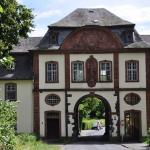
Kloster Arnsburg
Weitere Informationen und Anmeldung:
Pfarrer Rainer Beier, Ev. Stadtkirchenarbeit Mainz, Ev. Dekanat Mainz, Kaiserstr. 37 (3.OG) / 55 116 Mainz
Telefon: 06131 – 96 004 31
EUROPA-Projekt-Sonderseite: mainz-evangelisch-stadtkirchenarbeit.de/index/660
……………………………………………………………………………………………………………………………………………………….
Text eines Kommentars zur DVD "Zisterzienser"
Rückkehr zur Demut (Untertitel) - das ist das Programm der Kloster-Reformbewegung der Zisterzienser im 11. und 12. Jhdt. Ausgehend vom französischen Citeaux, - daher auch der Name - , überzieht die Reformbewegung ganz Europa und will die Klsöter zu ihren einfachen Ursprüngen zurückführen. Symbolisch dafür mag der für die Zisterzienser typische "Dachreiter" zu sein: kein wirklicher Kirchturm, sondern nur ein kleiner, auf das Dach aufgesetzter Turm. - Das Kloster (lat. claustrum = das Abgeschiedene) ist ein von der Außenwelt abgeschlossener Lebenbereich einer Gemeinschaft aus Männern oder Frauen. Die Begründung für das Mönchtum leitet sich biblisch wesentlich aus Mt 19,12 und Mt 19,27 ab. Die Ordensregeln gehen im Abendland auf Benedikt von Nursia (480-547) und die Benedikts-Regel zurück, die gern auf die Formel "Ora et labora" (Bete und arbeite) gebracht wird. Das Kloster hat die abendländische Kulturgeschichte entscheidend geprägt und zur Stadt- und Wirtschaftsentwicklung im Mittelalter elementar beigetragen. Die Dokumentarfilmreihe „Te Deum“ stellt Glaubensinhalte und die Entstehungsgeschichte von sechs Ordensgemeinschaften vor, darunter auch die Zisterzienser, die für die Reform des westlichen Mönchtums von fundamentaler Bedeutung sind.
++++++++++++++++++++++++++++++++++++++++++++++++++++++++++++++++++++++++++++++++++++++++++
"Mainzer Texte"
aus Projekten der Evangelischen Stadtkirchenarbeit Mainz
aktuellste Übersicht vom Juli 2017
Die Evangelische Stadtkirchenarbeit Mainz im Verantwortungbereich von Pfarrer Rainer Beier
dokumentiert - so irgend möglich - wichtige Vorträge aus ihrer Arbeit als
Printmedien "MainzerTexte" oder auch Tonmitschnitte.
Dipl. Theol. Christian Jansen hat diesen Überblick gerade ergänzt bzw. aktualisiert.
Die umfängliche Gesamtaufstellung finden Sie in unserer Projekt-Homepage
"Lebendige Vergangenheit" - MAINZER TEXTE":
mainz-evangelisch-stadtkirchenarbeit.de/index/390
Auf Wunsch können Sie "Mainzer Texte" zum Unkostenbeitrag von 3,50 Euro im Büro der
Ev. Stadtkirchenarbeit Mainz
Kaiserstrasse 37 (3.OG) - 55 116 Mainz
bestellen bzw. nach vorheriger Absprache (Telefon: 06131 / 96 004 32 oder 96004 31) abholen
bzw. entsprechend der Portokosten zuschicken lassen.
Hier einige Beispiele aus den Jahren 2004 bis 2017
Exemplarisch
Bischof Wolfgang Huber
"Der Evangelische Beitrag für das neue Europa - in kritischer Würdigung von Bonifatius als Missionar und Reformer"
Ökumenische Eröffnung der "Bonifatius Route" zwischen "Alten" und "Neuem" Dom 2004 in Mainz
über
Reverend Dr. Charlotte Methuen
"Frauenmystik im Mittelalter - Theologie einer weiblichen Gotteserfahrung?
in der Vortragsreihe zur Barlach-Ausstellung: "Mystiker der Gegenwart" - und Vergangenheit
über
Karl Kardinal Lehmann, Bischof von Mainz
Barlach: Die lesenden Mönche
in der Barlach-Reihe: Persönlich betrachtet
über
Dr. Peter Waldmann,
Landesverband der Jüdischen Gemeinden in Rhgeinland-Pfalz
"Mose"
- dito -
über
Dr. Hermann-Dieter Müller, Historiker, Mainz-Gonsenheim
"Mainz unter blau-gelbem schwedischen Banner"
im Schwedenprojekt "Wer das Schwert nimmt"
über
Erzbischof em. Gunnar Wemann, Sigtuna, Schweden
"Selig sind die Frieden stiften"
dito.
über
Dr. Andrea Fürst, Hundertwasser-Archiv, Wien
"Friedensreich Hundertwasserr - eine Würdigung zum 80. Geburtstag"
zur Eröffnung der Hunderwasser-Ausstellung in der Mainzer Christuskirche:
"den Cherub betören -
Friedensreich Hundertwasser -
und die Sehnsucht des Menschen nach dem Paradies"
+
Rainer Beier, Evangelischer Stadtkirchenpfarrer von Mainz
Theologische Anmerkungen zum Hundertwasser-Projekt 2008 in Mainz
über
Dr. Oliver Kohler, Mainz
"Du bist, wo mein Aug´ist ...(Paul Celan)
Andreas Felger - ein Maler der Postmoderne
Felger-Ausstellung
über
Prof. Fulbert Steffensky, Hamburg
„Das gegossene Bild, das Lügen lehrt“ (Hab 2,18)
Das biblische Bilderverbot als Zumutung der Freiheit
Christuskirche Mainz
über
„An ihren Früchten werdet ihr sie erkennen.“ – Jesus
Dr. Hermann-Dieter Müller
„Führung zu den Grabstätten von Persönlichkeiten des Evangelischen Mainz“
Hauptfriedhof in Mainz
bis hin zu
Pfarrer Rainer Beier
"beziehungsWeise" - 2017
Die 3 Theologischen Beiträge zu:
* „Albrecht von Brandenburg“ (1543) aus der Werkstatt von Lucas Cranach d. Ä.
* „Ohne Titel“ (1987) von Sigmar Polke,
ergänzt durch ein Hauptwerk von Polke: Seine Kirchenfenster im Großmünster zu Zürich
* „Venus und Adonis“ (um 1580) von Palma il Giovane
Landesmuseum Mainz
.....................................................................................................................................................................
PERSPEKTIVE 2018
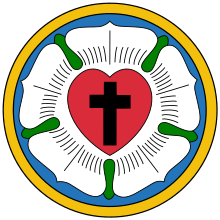
"Lutherrose blühe auf"
Veranstaltungs-Reihe u.a. mit:
Vortrag:
Katharina von Bora
Referentin: Pfrn. Dr. Theol. Sabine Kramer
*
Filmabend:
"Katharina Luther"
- möglichst im Beisein der Hauptdarstellerin der "Katharina"
*
Besuch des Rosenfestes in Steinfurth
mit Rosenkorso
-
mit Vorführung der Rosen:
"Katharina von Bora" und "Martin Luther"
im ältesten Rosenzüchterbetrieb Deutschlands
-
mit Besuch des Rosenmuseums
-
Rosen-Pflanzaktion in Mainz
.................................................................................................................
Perspektive 2019

"Fastnacht und die Narren"
Dieses Foto einer Original Maske aus Venedig ( handgemacht )
ist der Vorbote für das Projekt "Karneval in Venedig" in der Reihe der
Ev. Stadtkirchenarbeit Mainz "Fastnacht und die Narren".
Aktuell beginnen die ersten konkreten Planungsschritte für dieses Vorhaben in 2019.
Weitere Infos zu "Fastnacht und die Narren"
mainz-evangelisch-stadtkirchenarbeit.de/index/622
*
Tolle Resonanz !
Viele Gäste mußten stehen - alle Sitzgelegenheiten waren belegt.
Über 80 Besucher waren hoch erfreut über die Text-"Impulse"
und die Musikbeiträge der Meisterschüler
Alle freuen sich auf die nächste Veranstaltungsreihe in 2018.
*
"beziehungsWeise"
am Sonntag, dem 2.Juli um 15 Uhr
Landesmuseum Mainz

Palma il Giovane:
"Venus und Adonis"
(um 1580)
........................................................................................
Kunsthistorischer Impuls:
Ursula Wallbrecher M.A.,
Landesmuseum Mainz
Theologischer Impuls
Pfarrer Rainer Beier
Evangelische Stadtkirchenarbeit Mainz
Ev. Dekanat Mainz
Der inhaltliche Schwerpunkt war die Thematik:
Putten und Engel
Musikalischer Impuls:
Prof. Benjamin Bergmann
und seine Meisterschüler
Hochschule für Musik Mainz Logo Hochschule
*
Musik von A. Vivaldi (Der Herbst), K. Szymanowski (Mythen), J. Brahms
Ausführende:
Hyojin Yang, Ariane Jay und Tomomi Motomura (Violine), L. Dorfman (Klavier)
Eintritt 1 Euro p.P. (Familiensonntag)
...............................................................................................................................
Rückblick:
Pfingstsonntag
15 Uhr
Landesmuseum Mainz
"beziehungsWeise"
Sonntag, 4. Juni 2017 / 15.00 Uhr (Pfingsten)
Sigmar Polke, Ohne Titel (1987)
Sigmar Polke.jpg)
Bei Pfarrer Beiers "Theologischem Impuls"
wird ergänzend Bezug genommen auch zu einem Hauptwerk von Sigmar Polke:
seine Kirchenfenster im Groß - Münster zu Zürich
Beispiel:
Kirchenfenster gestaltet mit Achatsteinen

Musik von D. Milhaud (Le boeuf sur le toit), L.v.Beethoven u.a.
Ausführende
Ensemble Mainzer Musici, Leonid Dorfman (Klavier)
Eintritt 1 Euro p.P. (Familiensonntag)
Erfreulich:
Über 40 Personen folgten unserer Einladung.
Jede/r bekam am Ende der Veranstaltung
a) einen eigenen farbigen Achat
und
b) die Broschüre von allen Polke-Fenstern
als Pfingst-Geschenk von Pfarrer Beier überreicht.
Weitere Informationen zur Reihe:
mainz-evangelisch-stadtkirchenarbeit.de/index/653
*
"Hier bin ich Narr,
hier darf ich sein,
an Fassenacht in Mainz am Rhein"
Unter diesem Motto feiern viele Mainzer und tausende von Gästen
ihr wohl beliebtestes Volksfest.
"Fastnacht und die Narren"
Bewußt außerhalb der Kampagnenzeit hatte die Ev. Stadtkirchenarbeit Mainz auch in 2017
zu einem besonderen Veranstaltungsangebot eingeladen.
Führung am Mainzer Fastnachtsbrunnen
.jpg)
„Dem Zeitgeist mutig den Spiegel vorhalten"
Vortrag über die Entstehung der politisch-literarischen Fastnacht am Mittelrhein.
Historische Hintergründe und Textbeispiele

jeweils vorgetragen von
Herrn Peter Krawietz,
ehem. Kulturdezernent der Landeshauptstadt Mainz,
Vizepräsident im Vorstand "Bund Deutscher Karneval e.V."
*
Herzlich bedankt von Pfarrer Beier für eine tolle Führung und einen eindrücklichen Vortrag

..................................................................................................................................
Aktuelle BLITZ-INFO
2 Kircheneintritte in die Evangelische Kirche an einem (1) Tag
in der Kircheneintritts-Stelle des Ev. Dekanates Mainz !
+
aktuell kurz darauf ein weiterer + 1 weiterer "in spe"
Wir freuen uns.
..............................................................................................................................
"BeziehungsWeise"
am Sonntag, dem 14. Mai um 15 Uhr im Landesmuseum Mainz

Ein besonderer Gast
"CLARIOR BAVARICUS"
begegnet
ALBRECHT VON BRANDENBURG ( bzw. MAINZ )
- an dessen Gemälde aus der Cranach-Werkstatt -
einer zentralen Figur am brisanten Beginn des Ablaßsstreites
und damit dem "Funken der Reformation".
Weitere Informationen auf dieser Homepage
Zum Gesamtprojekt "beziehungsWeise":
mainz-evangelisch-stadtkirchenarbeit.de/index/653
Der Text des Beitrags von "Clarior Bavaricus" / alias Pfarrer Rainer Beier
mainz-evangelisch-stadtkirchenarbeit.de/index/658
..................................................................................................
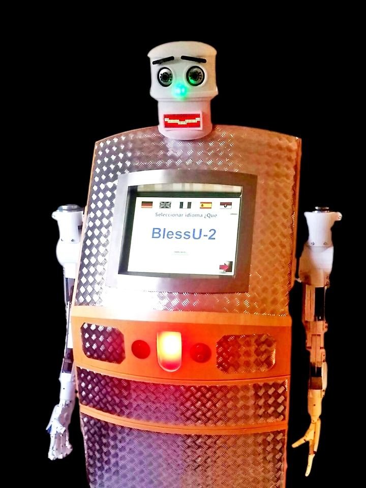
"Segens-Roboter"
Meine Meinung:
Das geht ja gar nicht !
Weitere Informationen dazu unter:
mainz-evangelisch-stadtkirchenarbeit.de/index/650
.....................................................................................................................................................................................
"Schöpferischer Kosmos"
Hinweis:
Den Abschlußbericht zum Projekt von Pfarrer Rainer Beier
finden Sie ab sofort
auf einer Unterseite der Projekt-Sonderseite:
mainz-evangelisch-stadtkirchenarbeit.de/index/657
.........................................................................................................................................................................................................................
VORAB-Hinweis:
EINLADUNG
Vortrag
Prof. em. Dr. Dr. h.c. mult. Jan Assmann
Ägyptologisches Institut der Ruprecht-Karls-Universität Heidelberg
Mittwoch, 18. Oktober 2017
18.15 Uhr
Christuskirche Mainz
"Gott und Welt im Alten Ägypten"
Die alten Ägypter waren davon überzeugt, dass die Welt – auch wenn es eine Welt voller Götter war - aus einem Urgott entstanden ist, der sich in die Welt verwandelt hat. Echnaton hat diese Sicht radikalisiert und die Götter zugunsten der Sonne abgeschafft, die Theologen der Folgezeit haben sie zu einem Pantheismus weiterentwickelt, der über griechische Quellen im Abendland weiterlebte.
www.uni-heidelberg.de/fakultaeten/philosophie/zaw/aegy/institut/assmann_cv.html
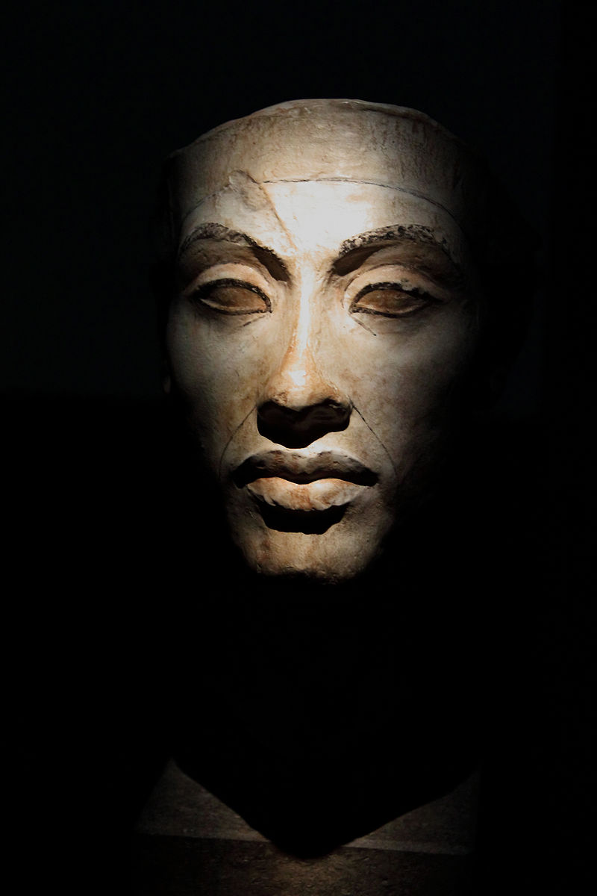
"Echnaton", Ägyptisches Museum, Kairo
*
Dieser Beitrag war ursprünglich geplant in der Ringvorlesung
"Schöpferischer Kosmos" im WS 2016 / 2017.
Wegen des Ausfalls der Bahnverbindung konnte er damals nicht stattfinden.
Ich freue mich, daß ich Herrn Prof. em. Dr. Dr. h.c. mult Jan Assmann
noch einmal für seinen Vortrag in Mainz gewinnen konnte -
diesmal im Kontext "AGORA".
mainz-evangelisch-stadtkirchenarbeit.de/index/652
(= Aktuelle Sonderseite zu AGORA )
............................................................................................................................................................................................................
Auch das noch ...
Der Playmobil-Luther
Die 7,5 Zentimeter Plastikfigur bringt zum Ausdruck,
dass der christliche Glaube auch eine spielerische Seite hat
Noch acht Monate sind es bis zum eigentlichen Reformationsfest. Doch schon jetzt entpuppt sich Martin Luther als Star:
Mit Bibel, Schreibfeder und schwarzem Talar ausgestattet stellt der kleine Playmobil-Luther einen Verkaufsrekord auf.
Die Reformation feiert am 31. Oktober ihren 500. Jahrestag, und deshalb wurde die Sonderfigur bei Playmobil in Auftrag gegeben.
Die niedliche Plastikfigur mit dem „Pottschnitt“ wirbt für das Reformationsjubiläum 2017 mit großem Erfolg.
Was reizt eigentlich an der Playmobil-Luther-Figur?
• Mag die Spielfigur als schlicht, brav oder naiv erscheinen, staunt man dennoch nicht schlecht vor dem Anspruch, mit dem Luther-"Männchen" (fast) alle Menschen („4 - 99“) ansprechen zu wollen. Erzählt die Figur in ihrer Schlichtheit etwas von der menschlichen Sehnsucht nach einem hands-on Glauben,
also nach etwas, was man begreifen und festhalten kann?
In einer zunehmend komplizierten Welt vermittelt die verspielte Figur Leichtigkeit und verkörpert heldenhaften Mut.
• „Hier stehe ich“ – fröhlich. Der einzelne Mensch, mutig und engagiert, das Individuum, von Gott unendlich geliebt und durch Gnade gerecht gesprochen, steht hier im Mittelpunkt.
„Hier stehe ich“ – durch den Glauben – mutig und engagiert, hoffnungsvoll und zuversichtlich. „Hier stehe ich“ – mir wird nichts mangeln.
• Luther lächelt. Zahlreiche Darstellungen vom Reformator gibt es, allem voran die von Lukas Cranach. Aber ein Luther, der lächelt?
Selbst der große Reformator hat manchmal Gottes Macht und Gnade aus den Augen verloren, und meinte, er müsse selber die Welt retten.
Als Luther einmal mehrere Tage sehr niedergeschlagen war, trat seine Frau Käthe plötzlich in schwarzer Trauerkleidung in sein Zimmer.
"Wer ist gestorben?" fragte Luther erschrocken.
"Gott ist gestorben", antwortete sie, "denn du willst ja nicht aufhören, dir Sorgen zu machen".
Da musste Luther lachen und wurde wieder froh.
Einen Sinn für Humor – und ein Lächeln – kann sich ein fester Glaube leisten. Nicht nur zur Fastnacht.
In der Tat: Fast 500 Jahre nach Beginn der Reformation hat das Interesse an der Person von Martin Luther nichts eingebüßt.
Jene Faszination mit dem Reformator wird nicht zuletzt am derzeitigen Playmobil-Phänomen deutlich.
Dass eine solche Faszination für eine Erneuerung spricht
und die Reformation der Kirche, der Gesellschaft und der Welt umgesetzt wird,
darüber würde sich Martin Luther gewiss am meisten freuen.
Das ist wahr.
(c) EVANGELISCHE KIRCHE
IN HESSEN UND NASSAU
Kirchenverwaltung
Stabsbereich Öffentlichkeitsarbeit
Pfarrer Dr. Jeffrey Myers
Stellvertretender Beauftragter für die Reformationsdekade
Elisabethenstraße 51
64283 Darmstadt
Telefon: 06151/405-457
E-Mail: jeffrey.myers@ekhn-kv.de
www.Gott-neu-entdecken.de
*
"beziehungsWeise"
Impulse aus
* Kunstgeschichte
* Theologie
und
* Musik
zu 3 Exponaten
aus dem
Landesmuseum Mainz
Hier eines der drei Exponate in 2017
.jpg)
Palma il Giovane:
Venus und Adonis (um 1580)
„beziehungsWeise“ 2017 im Landesmuseum Mainz
Am Sonntag, dem 14. Mai beginnt um 15 Uhr im Landesmuseum Mainz die diesjährige Veranstaltungsreihe „beziehungsWeise“ mit Impulsen aus Kunstgeschichte, Theologie und Musik zu Kunstwerken aus eigenen Beständen. Im Mittelpunkt des 1. Termins steht das Bildnis Albrecht von Brandenburgs aus der Werkstatt von Lukas Cranach d.Ä. von 1543.
Albrecht von Brandenburg war geistlicher Vorgesetzter des Ablasspredigers Tetzel. Dessen Wirken hat Martin Luther zum Anlass für die Fertigung seiner "95 Thesen" genommen. Daraus erwuchs der Funken der reformatorischen Bewegung. Eben diese 95 Thesen hatte Luther auch an Albrecht nach Mainz gesandt.
Der „Theologische Impuls“ von Pfarrer Rainer Beier, Evangelische Stadtkirchenarbeit Mainz, an diesem Sonntag realisiert in ganz eigener, lebendiger Art diesen inhaltlichen Zusammenhang im 500. Reformations-Gedächtnis-Jahr 2017.
Im „Kunsthistorischen Impuls“ von Ursula Wallbrecher (Landesmuseum Mainz) wird es nicht zuletzt um das spannende persönliche Beziehungsgeflecht zwischen Lukas Cranach d.Ä. und Martin Luther und seinen Ideen, aber auch um die Beziehung Cranachs zu Albrecht von Brandenburg und zu anderen katholischen Würdenträgern gehen – also von einem sehr erfolgreichen Unternehmer und seinem Werkstattbetrieb zu potentiellen Auftraggebern der „alten“ sowie der neu entstehenden Konfession.
Der „Musikalische Impuls“ von Prof. Benjamin Bergmann, Sängern und Instrumentalisten der Hochschule für Musik Mainz knüpft thematisch an ganz anderer Stelle an dieses Gemälde an. Lassen Sie sich überraschen!
Die weiteren Termine dieser Reihe sind der 4. Juni und der 2. Juli, jeweils 15 Uhr.
Alle 3 Gemälde und weitere Informationen
unter:
mainz-evangelisch-stadtkirchenarbeit.de/index/653
*
AGORA
Begegnung von Wissenschaft und Evangelischem Glauben
in der Mainzer Christuskirche
Unter diesem Titel beginnt noch in 2017 ein neues Format von Veranstaltung der Evangelischen Stadtkirchenarbeit Mainz in der Verantwortung von Pfarrer Rainer Beier.
AGORA wendet sich insbesondere an Erwachsene, die Vortragsveranstaltung auf akademischen Niveau erwarten. Das Themenspektrum ist weit.
Neben Einzelveranstaltungen sollen auch thematischen Reihen ab 4 Terminen angestrebt werden. Zu Beginn des Jahres 2018 soll z.B. eine Reihe zur aktuellen Gehirnforschung stattfinden.
"Im Labyrinth der Synapsen und Neuronen"
Die moderne Gehirnforschung
und ihre Konsequenzen für Gesellschaft und Religion
Als Ort und Zeitpunkt ist definiert:
Christuskirche Mainz -
jeweils an einem Mittwoch, Beginn 18.15 Uhr
Zeitraum der Vorträge:
voraussichtlich Mai 2018
Wir danken der Christuskirchengemeinde für die Kooperation.
AKTUELLE Projekt-SONDERSEITE in dieser Homepage
mainz-evangelisch-stadtkirchenarbeit.de/index/652
*
PROJEKT-INFO:
"Schöpferischer Kosmos"
Die Ausstellung ist geschlossen.
Die Ringvorlesung lief bis zum 16.Februar 2017
Inzwischen sind die COSMOS-Gemälde
zu unserer Erleicherung
unbeschadet
wieder beim Künstler, Bernd Zimmer angekommen.
*
Auch die Sonderanfertigung der "Himmelsscheibe von Nebra" ist bei der Ausleiherin Frau Petra Roßner-Dietz
von Pfr. Beier zurück gebracht worden Ende März 2017.
*
Wir bedanken uns bei den Leihgebern für die Exponate
und bei allen Referentinnen und Referenten
für ihre Beiträge in der Ringvorlesung im WS 2016 / 2017 !
*
in Kooperation mit PD Dr. Dr. Seit, JGU, Mainz und Pfarrer Ackermann, ESG Mainz
- dankenswerter Weise auch aufgenommen in das Programm
von "Studium generale" der JUG Mainz
im Herbst / Winter 2016 / 2017
"Schöpferischer Kosmos"
Sämtliche Informationen zum Gesamt-Projekt
und alle aktuellen Hinweise finden Sie auf der Projekt-Sonderseite:
mainz-evangelisch-stadtkirchenarbeit.de/index/624
Die 16-seitige Gesamt-Broschüre ist als Printversion (auch) erhältlich im Büro der Ev.Stadtkirchenarbeit -
nach telefonischer Abklärung (06131-96 004 31).
* Einen Pressetext zum Gesamtprojekt finden Sie hier:
mainz-evangelisch-stadtkirchenarbeit.de/index/636
*Einen Überblickstext zu den Veranstaltungen der Ringvorlesung finden Sie hier:
mainz-evangelisch-stadtkirchenarbeit.de/index/635
Auf Einladung von Herrn Derix, dem Vorsitzenden des Rotary Club Wiesbaden-Rheingau
hielt Pfarrer Beier unter dem Titel "Suchet der Stadt Bestes - Beispielhaftes aus der Arbeit der Evangelischen Stadtkirchenarbeit Mainz"
einen Vortrag beim Treffen am Montag, dem 23. Januar im "Nassauer Hof" in Wiesbaden.
Die Schwerpunkte seiner Ausführungen waren neben den einführenden Hinweisen zur Entstehung dieses relativ neuen Feldes kirchlicher Arbeit in Mainz
Impulse aus der biblischen Geschichte des "Philippus und seiner Begegnung mit dem Kämmerer aus Äthiopien" (Apostelgeschichte 8, 26 f. ) für die Arbeit von Stadtkirchenarbeit heute. Dazu kam ein Überblick über die vielfältigen Projekte und Arbeitsfelder von 2001 bis heute in Mainz zu den Schwerpunktfeldern:
Kunst + Kirche, Stadtidentität + Ev. Erinnerungskultur, Basis-Glaubenskurse, Ökumene, spezifische Themen der Stadt Mainz und Internationales.
Die Zuhörenden waren besonders beeindruckt von dem "Reichtum" und der Vielfalt der Projekte,
sowie dem erkennbar hohen Engagement des Referenten in seiner Arbeit - so die Reaktion von Herrn Derix am Ende des Vortrags.
*
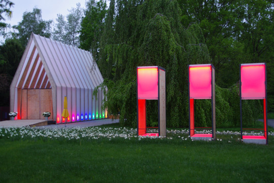
"LichtKirche" der EKHN auf der
"EXPO" des Glaubens in Wittenberg
Die Ev. Stadtkirchenarbeit des Ev. Dekanates Mainz wird in der Person von Pfarrer Rainer Beier
bei dem "LichtKirchen"-Vorhaben unserer Landeskirche (EKHN = Ev. Kirche in Hessen und Nassau)
in Wittenberg als "Geistlicher Begleiter" mitwirken.
Vom 20. Mai bis zum 10. September 2017 findet dort die „Expo des Glaubens“ statt. Der Inhaltliche Schwerpunkt ist ein inspirierendes Programm zum Thema „Segen“.
Das Kunstwerk "LichtKirche" bei der Weltausstellung
Als modernes Pendant zu den historischen Kirchengebäuden in der Stadt Wittenberg finden Sie die mobile LichtKirche auf der Weltausstellung Reformation. Sie ist im Torraum Globalisierung I Eine Welt aufgebaut. Mit ihr präsentiert die Evangelische Kirche von Hessen und Nassau zum Reformationsjubiläum einen modernen Kirchenraum aus Plexiglas, der die Grundgedanken der Reformation in die Gegenwart holt.
„Segen erleben“ wird möglich an der LichtKirche. Das Programm bietet Gebet und Gottesdienst, Musik und Tanz sowie kulturelle Veranstaltungen. Zugleich ist die Kirche ein Ort der Begegnung mit Gott und Menschen aus der ganzen Welt. Sie öffnet die Tür zu einer zeitgemäßen Spiritualität und bietet Raum für außergewöhnliche Veranstaltungen.
(c) Projekthomepage der EKHN ( s.u.)
Weitere Basis-Informationen
lichtkirche.ekhn.de/wittenberg-2017.html
........................................................................................................................................................................................
Erinnerung
SKA-Veranstaltung im Jahr 2016
Doppel-Vortragsveranstaltung zur Lutherdekade
in der Christuskirche zu Mainz
Entscheidende Impulse dafür gingen von Martin Luthers frühen reformatorischen Schriften aus. Der Eintrag dieser Schriften in das Weltdokumentenerbe der UNESCO hält die Erinnerung an dieses kulturelle Erbe Europas wach.
Prof. Dr. Irene Dingel gibt über die Vorstellung dieser frühen Schriften Luthers hinaus eine kleine Einführung in die Grundlagen der Reformation
Prof. Dr. Stephan Füssel stellt den prächtigen und reich illustrierten Druck der von Luther übersetzten vollständigen Heiligen Schrift aus dem Jahre 1534 vor und erläutert die theologische und sprachformende Kraft von Luthers Übersetzung.
Ein Kooperationsprojekt von Frau Prof. Dr. Dingel, Herrn Prof. Dr. Füssel und Pfr. Beier, Ev. Stadtkirchenarbeit Mainz - an der Orgel: Kantor Ellenberger
ORT und ZEIT:
Christuskirche, Kaiserstraße 56, 55 116 Mainz
25. Oktober 2016, 19 Uhr
Weitere Informationen:
mainz-evangelisch-stadtkirchenarbeit.de/index/634
..................................................................................................................................................................................................................................
Die Hochzeitsmesser in Mainz für das Rhein-Main-Gebiet
am 15. und 16. Oktober in der Mainzer Rheingoldhalle
Wie "alle Jahre wieder" ist auch im Jahr 2016 die Ev. Kirche auf dieser Messe für "alle, die sich trauen - wollen" ansprechbar. Am Stand der Ev. Stadtkirchenarbeit werden Pfarrer Rainer Beier, Spezialvikar Christian Brost, Dipl. Theol. Christian Jansen und Roland Pokorny interessierte Paare zum Gespräch und zur Beratung willkommen heißen - auf Wunsch bei einem Gläschen Wein oder Mineralwasser. Ein "Hochzeits-Test" für Hochzeitswillige bietet eine weitere - heitere - Anknüpfmöglichkeit für Gespräche mit den Paaren - und nach der Test-Auflösung - auch für die Paare unter sich. In den letzten Jahren konnten wir die Erfahrung machen, daß sehr viele Messe- BesucherInnen diese Gelegenheit für Beratungs-und Seelsorge-Gespärche nutzten. Immer wieder kam es "sogar" zu Kircheneintritten in diesem Kontext.
Wir sind gespannt auf unsere Gäste am Messestand, der im Innenbereich fast wie eine kleine Kapelle gestaltet ist und Raum für auch für tiefer gehende Gespräche bietet.
Hier ein Foto vom Messestand aus der Vergangenheit vor Beginn der Messe:

........................................................................................................................................
"Nacht der Offenen Kirchen in Mainz"
am Freitag, den 9. September
Erfreuliche Resonanz !

Weitere ausführliche Informationen:
www.kirchennacht-mainz.com/
................................................................................
Faszination in Glas, Licht und Farbe
Exkursion
zu der weltweit renommierten Glasmanufaktur in Taunusstein-Wehen
Die Palette reicht von Sakralen Projekten ( z.B. Richter-Glasfenster im Kölner Dom ) bis zu säkularen Vorhaben ( z.B. Glasfenstergestaltung der Europäischen Zentralbank, Frankfurt / Main ).
In Mainz finden sich z.B. von DERIX ausgeführte Arbeiten von Tobias Kammerer in der Ev. Kirche Mainz-Ebersheim und von Prof. Johannes Schreiter in der Ev. Kirche Mainz-Gonsenheim
Im Kontext der Feierlichkeiten hatte ich zur Exkursion am Sonntag, dem 25. September eingeladen.
Programm-Elemente:
14 Uhr Vortrag des Derix-Seniorchefs Wilhelm Derix zu den umstrittenen Glasfenstern von Gerhard Richter im Kölner Dom
15 Uhr Führung in den Studios und der "Galerie"

Blick in die Galerie mit exemplarischen Exponaten wichtiger moderner Glaskünstler
*

Mitarbeiterin der Werkstätten bei der Arbeit
Fotos: pfr.b.
am Sonntag, dem 25. September 2016
um 10 Minuten vor 14 Uhr bei
Platter Straße 94
D-65232 Taunusstein
Die Resonanz war überwältigend und führte zu dichtem Gedränge in den Räumlichkeiten - nicht zuletzt bei dem Vortrag vom Senior-Chef Derix über die Kölner Kirchenfenster. Besonders interessant und exklusiv war bei seinen Ausführungen nicht zuletzt macherlei Hintergrund-Informationen zum schwierigen Entscheidungsprozeß bis hin zum Einbau des Kunstwerkes.
Da wir eine EXTRA-Führung im Vorfeld "gebucht" hatten, konnten wir als "lila" Gruppe ( gekennzeichnte durch lila-EKHN-farbige Klammern ) in kleiner Schar ( ... die anderen geführten Gruppen waren oft doppelt so zahlreich ) den kundigen Ausführungen unserer Führerin folgen.
Nach der Führung trafen wir uns noch im Jagdschloß "Platte" - wenige Kilometer von den "DERIX-Glasstudios" entfernt -
zu Kaffee und Kuchen.
18 Personen haben insgesamt teilgenommen.
.........................................................................................................................................................................................
"Die Grundlagen der Reformation -
Frühe Luther-Schriften im Weltdokumentenerbe der UNESCO"

Entscheidende Impulse dafür gingen von Martin Luthers frühen reformatorischen Schriften aus. Dazu gehören nicht nur die 95 Thesen von 1517, Vorlesungen, Traktate, Lieder und Liturgie, sondern vor allem seine Bibelübersetzung. Das noch neue Medium des Buchdrucks unterstützte mit Flugblättern, Flugschriften, gedruckten Predigten und Liedern sowie der deutschsprachigen Bibel diesen geistigen Aufbruch ganz entscheidend.
Der Eintrag dieser Schriften in das Weltdokumentenerbe der UNESCO hält die Erinnerung an dieses kulturelle Erbe Europas wach.
Prof. Dr. Irene Dingel gibt über die Vorstellung dieser frühen Schriften Luthers hinaus eine kleine Einführung in die Grundlagen der Reformation
Prof. Dr. Stephan Füssel stellt den prächtigen und reich illustrierten Druck der von Luther übersetzten vollständigen Heiligen Schrift aus dem Jahre 1534 vor und erläutert die theologische und sprachformende Kraft von Luthers Übersetzung.
Begrüßung / Kurze Hinführung / Dank
Pfarrer Rainer Beier
Orgelmusik
Kantor Volker Ellenberger
ORT und ZEIT:
Christuskirche, Kaiserstraße 56, 55 116 Mainz
25. Oktober 2016, 19 Uhr
mainz-evangelisch-stadtkirchenarbeit.de/index/634
....................................................................................................................................................................................................
Rückblick:
Die diesjährigen Veranstaltungen im Landesmuseum Mainz
"beziehungsWeise"
Sonntag, 1. Mai 2016 / 15.00 Uhr
"Adam und Eva"

(unbek. Meister nach A. Dürer, 1507 oder später, Auszug)
Musik von E. Elgar und N. Paganini
Ariane Jay, Jaeho Lee u. Maria Schönwälder, Violine; Leonid Dorfman, Klavier
*
Sonntag, 5. Juni 2016 / 15.00 Uhr
"Allegorie des Friedens zwischen Frankreich und Neapel (1701/02)"
Paolo de Matteis
Musik von G. Ph. Telemann, Händel-Halvorsen und H. I. F. Biber
Marlene Crone u. Maria Schönwälder, Violine; Christoph Lamprecht, Cello (Kammerensemble Mainzer Musici)
*
Sonntag, 3. Juli 2016 / 15.00 Uhr
"Blick auf Terracina (vor 1842)"
Friedrich Burkhard Müller
Musik von J. Brahms und F. Mendelssohn
Tomomi Motomura, Violine; Leonid Dorfman, Klavier (Kammerensemble Mainzer Musici)
*
Kunsthistorischer Impuls:
Ursula Wallbrecher M.A.,
Landesmuseum Mainz
Theologischer Impuls:
Pfarrer Rainer Beier
Evangelische Stadtkirchenarbeit Mainz
Musikalischer Impuls:
Prof. Benjamin Bergmann u. seine Meisterschüler,
Hochschule für Musik Mainz
Eintritt 1 Euro (Familiensonntage)
........................................................................................................................................................................................................................................................
"GOTT LIEBT DIESE WELT"
Tages-Besucher-Rekord am letzten Ausstellungstag:
282 Personen.
*
Begeisterte Besucher:
Einträge im Gästebuch der Ausstellung
„Ich bin überwältigt von der Ausstellung.“
*
„Die Vielzahl der Figuren übertriff alle Erwartungen. Die kleinen Details sind so liebevoll gestaltet. Einfach wunderschön. Ich werde wiederkommen. Danke für die Mühe.“
*
"Cool."
*
„Vielen Dank für diese wunderbare Ausstellung! Ihr Einfallsreichtum und ihre Kunstfertigkeit lassen uns staunen. Ein ästhetischer Genuss und ein ausgezeichnetes pädagogisches Mittel. Wir wünschen ihnen noch viele Besucher.!
*
„Sehr eindrucksvoll und liebevoll gestaltet. Diese Ausstellung muß man öfters sehen.“
*
„Fantastisch gemacht! Alle Hochachtung vor der Detailgenauigkeit.“
*
"Die 150km Anfahrt haben sich gelohnt!"
*
"Mir hat alles sooo gut gefallen. Am liebsten hätte ich alles mitgenommen!"
.............................................................................................................
BESUCHER-REKORD an einem normalen Arbeitstag
Am letzten Mittwoch der Ausstellungszeit durften wir über 130 Schüler -
in geführten, zumeist römisch-katholischen Gruppen -
und weitere 90 Erwachsene in der Ausstellung begrüßen
............................................................................................................................................
"Gott liebt diese Welt"
Ausstellungsprojekt mit Begleitprogramm
mit über 500 Doris Egli - Erzählfiguren zur Lebensgeschichte Jesu
und 4 "Erzählinseln" zu Stationen aus dem Leben des Mose
zusätzlich:
"Große Kinder-Bibel-Ausstellung"
- mit über 50 Kinderbibeln + workshop

Beginn:
Sonntag, 14. Februar 2016 - 10 Uhr
Eröffnungsgottesdienst
Christuskirche Mainz
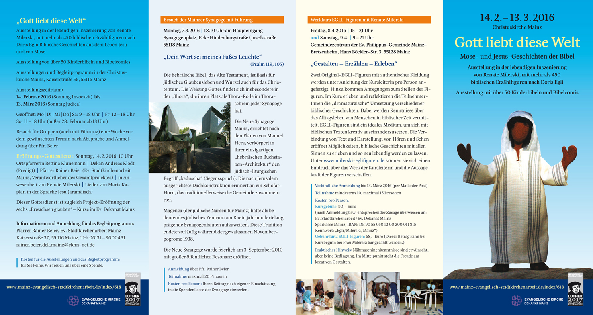
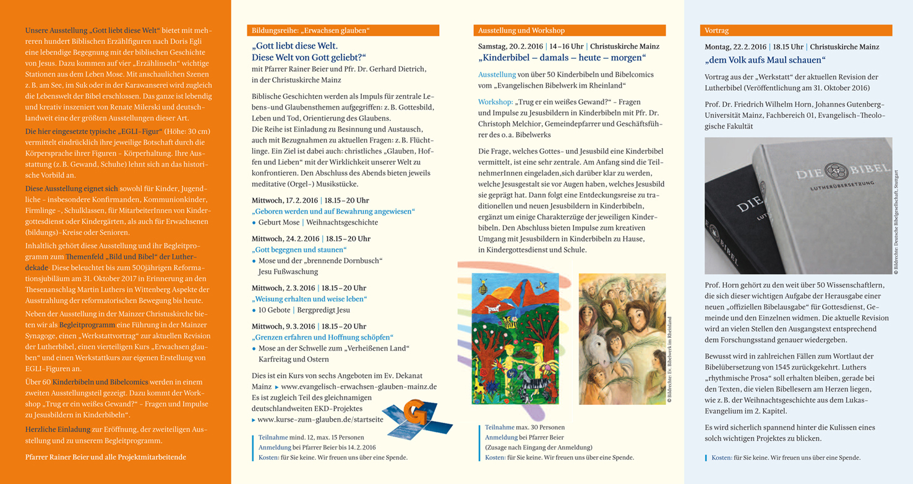
Weitere Informationen auf der Aktuellen Sonderseite zum Projekt:
mainz-evangelisch-stadtkirchenarbeit.de/index/618
( einfach anklicken ! )
.....................................................
"Evangelisch erwachsen glauben"2016
im Ev. Dekanat Mainz'
Projekt-Eröffnung
im Gottesdienst in der Christuskirche
am Sonntag, den 14. Februar
Beginn: 10 Uhr

Weitere ausführliche Informationen:
evangelisch-erwachsen-glauben-mainz.de/index/629
...........................................................................................................................................................................................................................................................................................
VORSCHAU
Herbst 2016
*
"SCHÖPFERISCHER KOSMOS"
Weltbilder - Mikrokosmos / Makrokosmos
von der "Himmelsscheibe von Nebra" bis zum "Gottesteilchen" im Kernforschungszentrum CERN bei Genf
Ausstellung
mit COSMOS-Gemälden von Bernd Zimmer
in der ESG - Kirche Mainz

Gemälde von Bernd Zimmer: "Wohin?"
Leitbild des Gesamtprojektes - 4x2 m
Die großartigen großformatigen "Farbexplosions-Gemälde" zum Thema COSMOS des renommierten Künstlers Bernd Zimmer
in der eindrücklichen Innenarchitektur des Schweizer Architekten Ernst Gisel schaffen den Raum in der ESG-Kirche in Mainz
als "Hintergrund" zu einer spannenden Auseinandersetzungmit den Weltbildern aus der Frühzeit des Menschen
bis hin zu den modernsten Forschungen unter natur- und geisteswissenschaftlichen Aspekten.
Ausstellung mit umfänglichem Begleitprogramm
mainz-evangelisch-stadtkirchenarbeit.de/index/624
............................................................................................................................................
Einige Rückblicke auf das Jahr 2015
- aus Sicht der Ev. Stadtkirchenarbeit Mainz

Der Bericht
Verfasserin: Frau Dr. Weisheit-Zenz
Bericht mit Bildern auch in:
rheinhessen-evangelisch.de/die-dekanate/dekanat-mainz/neues/nachrichten/artikel/
Seine geführte Tour durch Mainz mit aufschlussreichen Entdeckungen hinter sonst meist verschlossenen Türen widmet er einem aktuellen Thema, das viele bewegt: An drei Stationen, die zunächst eine Überraschung bleiben, erfährt man mehr über „Flüchtlinge in Rheinland-Pfalz und Armut in Mainz“, durch Texte und Interviews, begleitet von Musik. Von Anfang an mit dabei ist Winfried Späth, der mit seiner Panflöte die jeweilige Stimmung aufgreift und musikalisch interpretiert. „Wenn sich eine Türe schließt, öffnet sich anderswo oft eine neue“, gibt Pfarrer Volker Truschel als Gruß mit auf den Weg, auch mit Blick auf Erfahrungen der Johannisgemeinde, die wegen der Ausgrabungsarbeiten die gute ökumenische Nachbarschaft der Augustinerkirche schätzt. Erstes Ziel ist ein Bürogebäude in der Großen Bleiche.
Der „Beauftragte der Evangelischen Kirchen im Lande Rheinland-Pfalz“ hat hier seinen Sitz, es ist quasi die Evangelische Botschaft der drei einzelnen Landeskirchen in Mainz. Auch das landesweite Referat für Flucht und Migration ist hier angesiedelt, in unmittelbarer Nähe zu politisch Verantwortlichen in Landtag und Ministerien. Stellung zur Situation der Flüchtlinge bezieht auch die „Erklärung der Leitenden Geistlichen der evangelischen Landeskirchen Deutschlands“, aus der Pfarrer Rainer Beier zitiert. Legale Wege für Schutzsuchende werden darin ebenso gefordert wie eine Willkommenskultur, die sich gegen Fremdenfeindlichkeit ausspricht. Einen Blickfang im Raum bildet ein großes Kunstwerk, das ein kleines Schiff über tiefen Meereswellen zeigt, und lange Listen. Der Titel des Bildes: „Sie haben einen Namen“.
„Viele Menschen, die vor Not und Elend geflohen sind, wären sicher gern in ihrer Heimat geblieben, doch ihnen fehlte jede Perspektive“, beschreibt Uli Sextro, Landesweiter Referent für Migration der AG Diakonie in Rheinland-Pfalz. Für die Flucht mussten sie häufig viel Geld zahlen und große Gefahren auf sich nehmen; wieder zurückzukehren sei kaum möglich. Derzeit, so berichtet der Referent, gibt es 25 große Aufnahmeeinrichtungen in Rheinland-Pfalz mit ca. 15.000 Plätzen, mehr als 1000 Menschen sind in Zelten untergebracht. Ob im Seniorenalter oder zusätzlich zu Beruf und Familie: Viele Menschen tun ihr Möglichstes, um zu helfen, lobt er das große ehrenamtliche Engagement. Doch woran es dringend fehle, seien weitere Ressourcen, ob finanziell oder beim Personal. Die Diskussion im Anschluss zeigt, wie erhitzt die Gemüter sind, auch unter der älteren Generation, die zwar oft selbst noch Krieg und Vertreibung kennt, doch sich auch sorgt, sei es um die Renten oder die Sicherheit im Land angesichts der großen Herausforderungen.
Auch andere arme Menschen brauchen dringend Unterstützung: Mehrere hundert von ihnen können die Lebensmittelausgabe für Bedürftige nutzen, gegen Vorlage des Sozialausweises und einen Obolus von 1,50 Euro. „Über einhundert Ehrenamtliche sind bei der Mainzer Tafel e.V. registriert; wer kann, ist jeweils an einem Tag zwischen Dienstag und Freitag vor Ort oder mit dem Kühlfahrzeug auf Tour zu Supermärkten“, berichtet Gisela Schmitz-Rother, die 2. Vorsitzende. Was die Fahrer an Essen mitbringen, ist zuvor nicht bekannt. Jede helfende Hand kann der Verein brauche, der sich auch über weitere Geld- und Sachspenden freut.
Die dritte Station ist am Stadthaus in der Kaiserstraße, wo Sozialdezernent Kurt Merkator die große Pforte öffnet. „Es gibt viel zu tun“, berichte er und nennt aktuelle Zahlen: Waren es 2013 258 und vergangenes Jahr 568 Menschen, die Mainz zugewiesen wurden, rechnet man für 2015 mit etwa 1800. In seinen mehr als 30 Dienstjahren sei die physische und auch psychische Belastung selten so hoch gewesen wie derzeit, sagt er, mit Blick auf das Leid der geflohenen Menschen wie auf den Unmut der Bevölkerung. „Für die einen ist das, was getan wird, noch nicht genug, andere sind sehr ärgerlich darüber“, beschreibt er den Spagat der unterschiedlichen Erwartungen an die Stadt und die entsprechende Wut, die er und seine Mitarbeitenden zu spüren bekommen. Bei allem Verständnis möchte er Hilfesuchenden gleich deutlich machen: „Wer zu uns kommt, muss akzeptieren, dass Frauen in unserer Gesellschaft gleichberechtigt sind.“ Dankbar ist auch er für den enormen ehrenamtlichen Einsatz. Neue Angestellte sollen helfen, die vielen einzelnen Aktivitäten, die Angebote und Bedarfe noch stärker zu koordinieren. „Wenn das Brot, das wir teilen“: Das Lied, das die Gruppe singt, hat eine symbolische Bedeutung, ebenso wie das kleine süße Dankeschön, das Pfarrer Rainer Beier überreicht: „Schon Bischof Nikolaus hatte bekanntlich ein Herz für die Armen.“
Evangelische Kirche war auch 2015 präsent auf der

Die wichtigsten Themen waren Konfessionsverschiedenheit und die damit verbundenen besonderen Fragen; erstmals auch zweimal bei einem evangelischen und syrisch-orthodoxen Partner. Aus zwei Begegnungen erwuchsen jeweils Kircheneintritte in die Evangelische Kirche. In die Tiefe gingen auch Gespräche mit seelsorgerlichem Anlaß ( z.B. Tod eines Angehörigen )
oder mit Menschen, die aus der Kirche ausgetreten waren und deswegen auch nicht kirchlich heiraten wollen, aber doch bereit waren, sich hier auf der Messe auf das Gespräch mit einem Pfarrer einzulassen.
In einer ganzen Reihe von Gesprächen ging es auch um praktische Fragen der Gestaltung des Traugottesdienstes ( z.B. Liedauswahl ). Natürlich bleibt das die eigentliche Aufgabe des / der die Trauung durchführenden Geistlichen. In diesem Jahr gab es für Kinder ein besonderes "Angebot": eine kleine Gruppe von sogenannten Egli-Erzählfiguren: ein Hirte mit drei Schafen.
Sie wiesen zugleich auf das Große Ausstellungsprojekt "GOTT liebt diese Welt" ab Mitte Februar 2016 in der Christuskirche hin. Renate Milerski wird dann mehrere hundert Egli-Figuren creativ präesntieren. Das Thema ist die Jesus-Geschichte und in 4 "Erzählinseln" ausgewählte Mose-Geschichten. ( vgl. hier auf dieser SKA-Homepage:mainz-evangelisch-stadtkirchenarbeit.de/index/618 )
Der schon traditionelle "Hochzeitstest für Paare" wurde gerne für "zu Hause" mitgenommen. Einige füllten ihn bereits am Messe-Stand aus und waren gespannt auf die "Auswertung".
Bei der "ansprech-Bar" konnte man neben Mineralwasser auch wieder den guten Ev. Kirchenwein ( insbesondere in den nachmittäglichen Stunden ) genießen.
Die überaus erfreuliche Resonanz der Messe-Besucher motiviert uns zum Wiederkommen - auch in 2016.
..........................................................................................................................................
Die Fastnacht
... bewußt außerhalb der Kampagne - in den Blick genommen
Ganztagesexkursion
zum
"Deutschen Fastnachts Museum"
in Kitzingen / Main
am Samstag, dem 27. Juni 2015
( An diesem Tag fand das Weinfest auf den Mainwiesen statt. )
PROGRAMM:
Busfahrt mit Start um 7.30 Uhr an der Christuskirche
(Die verschiedentlich angegebene Abfahrtszeit 8.30 Uhr ist falsch !)
Treffpunkt am Fuß der Haupteingangstreppe um 7.20 Uhr
* FÜHRUNG: 10.30 Uhr im Fastnachts-Museum
Das "Deutsche Fastnacht Museum" in Kitzingen
… historisch fundiert, unterhaltsam aufbereitet, närrisch garniert
Nach einem umfangreichen Umbau und einer Neukonzeption präsentiert sich das Deutsche Fastnachtmuseum im neuen Gewand. Dank zahlreicher Mitmach-Stationen und weitläufiger Ausstellungsräume verspricht es einen kurzweiligen Museumsbesuch.
Historische Entwicklung
Begeben Sie sich auf eine Reise durch die Geschichte seit dem Mittelalter bis in das 19. Jahrhundert. Ihnen begegnen mittelalterliche Narrengestalten, frühe Maskenfiguren, Schembartläufer, Figuren der Comedia dell’Arte und Teilnehmer der barocken Kostümfeste und des bürgerlichen Karnevals. Die Auswahl an Exponaten aus den letzten fünf Jahrhunderten wird Sie verblüffen!
11 Thesen zur Fastnacht
Sie wollten schon immer wissen, was „Helau“ und „Alaaf“ eigentlich bedeuten? Was es mit der Bütt auf sich hat? Oder warum sich alles im Karneval um die Elf dreht? Dann sind Sie in unserem Museum richtig. Denn hier können Sie allen Fragen rund um Fasching, Fastnacht und Karneval spielerisch auf den Grund gehen. Freuen Sie sich auf närrische Überraschungen!
Kostümgeschichten
In einem virtuellen „Narrentheater“ erzählen Figuren mit Kostümen aus verschiedenen Karnevals- und Fastnachtsregionen ihre Geschichte. Erleben Sie so Elemente traditioneller Umzüge – das ohrenbetäubende Getöse und den schillernden Farbenrausch unzähliger Kostüme – hautnah.
Schatzkammer und Maskengalerie
Orden mit Brillanten, glänzende Präsidentenketten und prächtige Narrenzepter – in unserer Schatzkammer werden Sie aus dem Staunen nicht mehr herauskommen.
Dreizehn Fastnachtsmasken zeigen Ihnen, wie unterschiedlich die Gesichtsmasken im deutschsprachigen Raum, von Villingen bis Nassereith und vom Alpenraum bis in die Rhön, sein können.
(Dieser Text stammt aus dem aktuellen Flyer des Museums)
Weitere Informationen:
Link des Museums:
deutsches-fastnachtmuseum.byseum.de/de/home
* Möglichkeit zur individuellen Besichtigung des Historischen Stadtkerns
* Möglichkeit zum individuellen Besuch des Weinfestes auf den Mainwiesen
* Vortrag zur Geschichte von Stadt und Ökumene in Kitzingen
vom evangelischen Pfarrer Uwe Bernd Ahrens ( ausgezeichnet als "Till von Franken")
- mit närrisch-besinnlicher Schlußandacht in der Ev. Stadtkirche Kitzingen
Beginn 17 Uhr
..................................................................................................................................
Kurzer Bericht von der Exkursion:
Hatte es bei dem Start an der Christuskirche noch geregnet ( ... einzig "aufgehellt" durch die Äußerung von Herrn Krawietz: "Es regnet.Gott segnet" ..), so blieben die Regentropfen nach Ende der überaus gelungenen Führung durch einen "Fachmann mit großen Herz für die Fastnacht", Herrn Driesel im Deutschen Fastnacht Museum im Himmel. Aus dem großen Schatz seiner Kenntnisse erläuterte er insbesonder die besondere Bedeutung des "Narren" in der Geschichte. Das "virtuelle Narrentheater" machte die große Vielfalt der so unterschiedlichen Traditionen lebendig faßbar. Man hätte auch noch nach 2 Stunden gerne weiter dem lebendigen Vortrag des Führenden zuhören können. Aber das Mittagessen war terminiert - mit Vorbestellung.
Schon bei der Hinfahrt hatte Herr Krawietz im Bus über seine reichen Erfahrungen im Kontext Fastnacht sowohl in Mainz als auch in seiner Funktion als Vizepräsident im "Bund Deutscher Karneval" in einem längeren Interview mit Pfarrer Beier berichtet: so z.B. über die Hintergründe des Entstehens des Mainzer Fastnachtbrunnens oder des Deutschen Karneval Museums. Immer wieder geht es dabei auch um überaus löbliches Bürgerengagement.
Das schmackhafte Mittagessen im gutbürgerlichen Lokal mit fränkischen Spezialitäten trug zur weiteren positiven Tagesgestaltung bei.
Individuell erkundete man am Nachmittag die reizvolle Stadt, mit Mainufer und Konditorei-Museum.
Um 17 Uhr traf man sich wieder zum Vortrag über die interessante Stadtgeschichte von Stadtpfarrer Ahrens. Die anschließende Andacht zu "Glaube- Hoffnung - Liebe" formulierte er in Versen.
Sein Organist präsentierte zum Abschluß in der Ev. Stadtkirche ein "närrisches Fastnachtslied" am Klavier, in dem die kleinen und großen Widrigkeiten in einer Kirchengemeinde mit einem heiteren Augenzwinkern vorgetragen wurden.
Pfr. Beier beschloß das Tagesprogramm in der benachbarten kath. St. Johannes-Kirche mit Dankgebet - Stille - und Segen.
Bei herrlichem Sonnenschein landete man am Abend wieder wohlbehalten in Mainz -
nicht ohne ein kurzes, gesungenes "Mainz bleibt" Mainz eines Fahrtteilnehmers beim Bus-Überqueren des heimatlichen Rheins auf der Weisenauer Brücke.
Er war sehr gelungen und bleibt in bester Erinnerung - so die einhellige Meinung der Fahrt-Teilnehmenden über diesen Tag.
GOTT sei Dank.
.............................................................................................................................................................................................................................................................................................................................
Peter Krawietz,
ehem. Kulturdezernent der Stadt Mainz und
Vizepräsident im Vorstand "Bund Deutscher Karneval e.V."
am Dienstag, den 9.Juni 2015 um 19.00 Uhr
im "Raum Erfurt" im "Haus der Evangelischen Kirche"
Kaiserstraße 37 ( 4.OG ):
"Vom Mummenschanz zum Rosenmontag -
Geschichte der Fastnacht am Rhein"

drei kurzen Zitaten zum "Narren" auf die religiösen Aspekte des Themas. Herr Krawietz entfaltete dann in einem großen Vortrags-Bogen von der Antike bis in die Gegenwart die Wurzeln und die
konkreten Ausprägungen der Fastnacht. Mit einer Fülle von historischen Details schilderte er anschaulich diese Entwicklung. Besonders wichtig war es ihm, zu unterstreichen,
daß die "eigentliche Fast-Nacht" nur in ihrem Sinn-Zusammenhang mit der kirchlichen Fasten-Zeit verstanden und gedeutet werden kann. Es ist die Nacht, dann die drei Tage und noch später die mehrer Wochen andauernde Zeit vor dem fleischlosen ( carne-vale ) sich Vorbereiten auf Karfreitag und Ostern. So entwickelte sich die Mainzer Fassnacht, wie wir sie noch heute kennen seit Mitte des 19. Jahrhunderts neu.
Der Kaufmann Nikolaus Krieger organisierte 1837 den "Krähwinkler Landsturm", einen bunten Zug von Narren. An diesem Vorläufer des heutigen Rosenmontagszuges beteiligte sich auch eine 15-köpfige närrische Bürgerwehr: die Mainzer Ranzengarde. 1838 übernahm diese Ranzengarde den "militärischen" Schutz der ersten Sitzungen des gerade gegründeten MCV und verstand sich in der Folge auch als Leibgarde des Prinzen Carneval. Das närrische Zeremoniell schreibt vor, dass jeder Ranzengardist mindestens zwei Zentner brutto wiegen oder einen Leibesumfang von sechs Fuß aufweisen muss.
Beeindruckend war die Schilderung des Referenten mit Original-Zitaten u.a. aus der Zeit der 1. Mainzer Fastnacht mit Ihren Umzügen, festlichen Bällen und aufkeimenden Fastnachtstraditionen - getragen von der Ranzengarde und dem MCV. Eine beträchtliche Leibesfülle war damals wirklich noch Voraussetzung; heute aber nicht mehr zwingend. Am Ende seines Vortrag verwies Herr Krawietz noch kurz auf den typisch Mainzer Aspekt der "literarisch-politischen Fastnacht" und signalisierte die Bereitschaft, bei nächster Gelegenheit dazu einen weiteren Vortrag anzubieten
Pfarrer Rainer Beier als Veranstalter bedankte sich herzlich bei dem Referenten. Ein großer Beifall der Zuhörer signaliserte deren Freude und Anerkennung für das Gehörte.
Im Blick auf das hohe inhaltliche Niveau des Vortrags schlug Pfr. Beier mit einem Augenzwinkern vor, daß doch jeder, der Bürger von Mainz werden wollte, vor seiner Einbürgerung
diesen Vortrag gehört haben müßte. Gestalt nahmen seine Dankesworte dann an in ausgesucht hervorragendem Wein aus dem rheinhessischen Weingut Manz,
die die Rebflächen der Ev. Kirche von Hessen und Nassau immer wieder mit Auszeichnungen verwalten. Frau Krawietz-Sommer erhielt einen Blumengruß.
Freudig griff Pfarrer Beier das Angebot bezüglich eines nächsten Vortrags von Herrn Krawietz unter dem Beifall der Anwesenden auf. "Wenn Gott will und wir leben"
könnte so das angestrebte Ziel des Beginns einer kleinen fastnachtlichen- Veranstaltungs-Tradition bewußt jenseits der Kampagnenzeit im Sommer nächsten Jahres
weiter aufgebaut werden. Schon seit vielen Jahren verbindet den Referenten und den Veranstalter eine hervorragende ökumenische Kooperation,
die dann auch darin eine erfreuliche Fortsetzung finden könnte.
Im Anschluß an den Vortrag wies Pfr. Beier noch auf die Fahrt zum Deutschen Fastnacht Museum in Kitzingen am 27. Juni hin
und erläuterte die Einzelheiten dieser Exkursion.
mainz-evangelisch-stadtkirchenarbeit.de/index/622
HERZLICHE EINLADUNG !
..................................................................................................................................................................................................................................................................................................................................

"Die Schweden kommen !"
... am Freitag nach Mainz.
Sie waren da!
Dr. Müller hat über dieses oft vergessene und in ausschließlich negatives Licht gerückte Kapitel Mainzer Stadtgeschichte "Schwedenzeit" promoviert. Er wurde begleitet von Pfarrer Rainer Beier, der im September bis November 2007 unter dem Titel "Wer das Schwert nimmt - König Gustav Adolf und die Schweden in Mainz. Krieg - Religion - Frieden. Damals und heute" eine mehrteilige Veranstaltungsreihe zu dieser Thematik auf der wissenschaftlichen Basis von Herrn Dr. Müllers Arbeit angeboten hatte. Dazu gehörte auch eine "Szenische Lesung" von Herrn Dr. Müller unter Beteiligung der beiden Oberbürgermeister von Mainz und Gustavsburg ( wie der Name schon besagt: eine Gründung des Schwedenkönigs Gustav Adolf ) sowie der beiden Dekane der evangelischen und römisch-katholischen Dekanate Mainz.
Der Oberbürgermeister der Stadt Mainz hat freundlicherweise für diese schwedische Gastgruppe einen Empfang im Rathaus arrangieren lassen und sie persönlich begrüßt. Die Gruppe bedankte sich mit einem Gemälde des Vorfahren. Pfarrer Beier bedankte sich seitens der evangelischen Kirche für die freundliche Geste der Stadt und überreichte Herrn OB Ebling einen Sonderdruck der szenischen Lesung "Mainz unter gelb-blauen schwedischen Banner" zur Schwedenzeit , erarbeitet von Dr. Müller und einen der so überaus erfolgreichen "Luther-Playmobil-Figuren". Dr. Müller übergab dem OB ein Original seiner wissenschaftlichen Promotionsarbeit.
Beide Letztgenannten verabschiedeten die Sparre-Familienangehörigen dann bei herrlichem Sonnenwetter in ihrem Bus am Rhein zur Weiterfahrt nach Dinkelsbühl - unter Gottes Segen.
........................................................................................................................................................................................................................................................
Die Mainzer Lutherkirche "im Ohr des SWR 4"
Die Lutherkirche zu Mainz als Beispiel für das "Notkirchenprogramm"
des großen Architekten des 20. Jahrhunderts OTTO BARTNING
Sendung am Pfingst-Sonntag im SWR4 - Rundfunk
von 13 bis 14 Uhr

Daß die Lutherkirche in Mainz zu den architekturgeschichtlich wichtigsten Kirchen nach dem 2. Weltkrieg gehört, ist den wenigsten Mainzern bekannt. Im Kontext der großen Walter - Habdank-Ausstellung vom 2. November 2014 bis zum 6. Januar 2015 wurde diese besondere Bedeutung in der Begegnung seiner Kunst mit dieser Otto Bartning Kirche mit Fach-Vorträgen aufgegriffen.
Jetzt hat sich der SWR 4 dieser Thematik Otto Bartning und sein "Notkirchenprogramm" nach dem 2. Weltkrieg angenommen. Die Redakteurin Hannegret Kullmann bereitet dazu einen Beitrag für Pfingsten vor. Dafür hatte sie mit dem Ortspfarrer Ulrich Hofmann-Schaefer und Stadtkirchenpfarrer Rainer Beier in der Lutherkirche bei einer Begehung ein Interview gemacht. Im 3-teiligen Gesamtbeitrag wird auch noch Frau Dr. Sandra Wagner-Conzelmann, die aktuell über Otto Bartning promoviert, aus fachwissenschaftlicher Sicht Stellung nehmen. Abschließend kommt in einem ausführlichen Zitat Otto Bartning selbst zu Wort.
....................................................................................................................................................................................................................................................................................................................................
"Glaube und Bild -
vor der Unsichtbarkeit des Ewigen"
Neu entwickelter Kurs
"Erwachsen glauben - 2015"
von Pfarrer Rainer Beier und Pfr. Dr. Gerhard Dietrich
4 Abende mit Bildern u.a. von
ALBRECHT DÜRER bis SALVADOR DALI
und
ARNULF RAINER bis MICHELANGELO
erschlossen wesentliche Aspekte des christlichen Glaubens.
4. und letzter Abend:
DONNERSTAG, 28.Mai
18.15 Uhr
"Raum Erfurt" - 4. Stock im "Haus der Evangelischen Kirche"
Kaiserstraße 37 - 4.Stock
Weitere Informationen:
siehe weiter unten auf dieser Homepageseite mit digitaler Version
des Gesamtprogramms "Erwachsen glauben" 2015 im Ev. Dekanat Mainz zur Einsichtnahme
Mit Erdbeeren ( der symbolisichen Pflanze des Mittelalters für die Trinität ) und prickelndem Sekt
wurde die letzte Kursstunde in froher Runde beschlossen.
Zuvor stand noch u.a. das Thema "Abendmahl" auch mit unterschiedlichen Darstellungen
( "Blutaltar" von Riemenschneider in Rothenburg;
Gemälde von Dali, Filmszente aus dem Jesus-Film von Zefirelli ) im Mittelpunkt.
................................................................................................................................................................................................................................................
Kurze Rückschau:
"beziehungsWeise" am Sonntag, dem 10.Mai 2015
"Die Darbringung Jesu im Jerusalemer Tempel"
Trotz Marathonlauf und an sich an diesem Tag geschlossenem Landesmuseum war für diese Veranstaltung das Museum EXTRA geöffnet.
Und es kamen - zu unserer freudigen Überraschung - viele Gäste und erlebten ein eindrückliches "Ensemble" von informativen, ja auch teils bewegenden Texten und meisterlich, teilweise wirklich virtuos dargebrachter Musik mit.
Zum Gemälde aus dem Altarzyklus "Mainzer Marienleben" gab es kunsthistorische ( Ursula Wallbrecher, Landesmuseum Mainz ), theologische ( Pfarrer Rainer Beier, Evangelische Stadtkirchenarbeit Mainz ) und musikalische ( Ariane Jay, Violine; Kathi Haselhorst, Viola; Leonid Dorfmann, Klavier; "Mainzer Musici" unter der Gesamtleitung von Prof. Benjamin Bergmann, Hohschule für Musik ) Impulse. U.a. war Musik von W.A. Mozart und G.F. Händel / Halvorsen zu hören.
Im Mittelpunkt des Bildes standen der greise Simeon und die Prophetin Hanna, die Jesus, Maria und Josef im Jerusalemer Tempel als "Heil der Welt" würdigen.
Nächster Termin:
Sonntag, 31. Mai- 15 Uhr - Landesmuseum Mainz:
"Kreuz-Übermalung" von Arnulf Rainer
...........................................................................................................................................................................................
Neues Gesamt-Projekt:
"Fastnacht und die Narren"
..........................................................................................................................................................................
Konkretion 2015
Ein Herzstück Mainzer Identität
Die Fastnacht
... mit 2 Veranstaltungen - bewußt außerhalb der Kampagne - in den Blick genommen
(1)
Vortrag
Peter Krawietz,
ehem. Kulturdezernent der Stadt Mainz und
Vizepräsident im Vorstand "Bund Deutscher Karneval e.V."
am Dienstag, den 9.Juni 2015 um 19.00 Uhr
im "Raum Erfurt" im "Haus der Evangelischen Kirche"
Kaiserstraße 37 ( 4.OG )
"Vom Mummenschanz zum Rosenmontag -
Geschichte der Fastnacht am Rhein"
Eintritt frei - Wir freuen uns über eine Spende.
Diese Veranstaltung ist zugleich - im Anschluß
Vortreffen aller angemeldeten Teilnehmer der Exkursion nach Kitzingen ( s.u. )
u.a. mit Übergabe sämtlicher Detailangaben zur Fahrt und des Kleinen Info-Pakets
*
(2)
Ganztagesexkursion zum
"Deutschen Fastnachts Museum" in Kitzingen / Main
am Samstag, dem 27.Juni 2015
mit Führung im Museum
Busfahrt mit Start um 7.30 Uhr an der Christuskirche
Treffpunkt am Fuß der Haupteingangstreppe um 7.20 Uhr
Weitere Informationen zum neuen Stadtkirchenarbeits-Gesamt-Projekt
"Fast-Nacht und die Narren"
unter:
mainz-evangelisch-stadtkirchenarbeit.de/index/622
und zum
Fastnachtsmuseum Kitzingen
deutsches-fastnachtmuseum.byseum.de/de/home
...........................................................................................................................................................................................
Sechs "Erwachsen glauben"-Kurse 2015 im Evangelischen Dekanat Mainz
Dekanatsweiter - Eröffnungsgottesdienst
des
EKD-Projektes
"ERWACHSEN GLAUBEN"
war in der Ev. Auferstehungskirche in Mainz
am Sonntag, dem 22. Februar 2015
Beginn: 10. 00 Uhr
- nach dem Gottesdienst mit Informationen der Kursleiter zu den diesjährigen Glaubenskursen.
Pfr. Beier dankte als der Moderator dieses Projektes auf Dekanatsebene den Kursleiterinnen für ihr Engagement und verwies auf die an alle Gottesdiensteilnehmer verteilten Info-Leporellos mit sämtlichen
Veranstaltungs-Hinweisen - bis hin zu den beiden zum Lutherdekadenjahr 2015 passenden Begleitveranstaltungen zu "BIBEL+BILD" und dem dazu gehörigen Glaubenskurs "Glaube und Bild - vor der Unsichtbarkeit des Ewigen".
( Angebote aus den Gemeinden des Ev. Dekanates Mainz ( Altmünster / Auferstehung / Ober-Olm/Klein-Winternheim und Ev. Stadtkirchenarbeit
mit Aufnahme der Themenstellung des Lutherdekadenjahres "BILD +BIBEL" im Kurs: Pfr. Dr. Dietrich und Pfr. Rainer Beier: "Glaube und Bild - vor der Unsichtbarkeit des Ewigen"
+ mit 2 Begleitveranstaltungen:
Exkursion zur Arnulf Rainer-Ausstellung im Museum Frieder Burda / Baden Baden
Weitere Informationen dazu: mainz-evangelisch-stadtkirchenarbeit.de/index/619
und
3-teilige Veranstaltungsreihe "beziehungsWeise" im Landesmuseum Mainz in Kooperation mit Landesmuseum, Hochschule für Musik und Ev. Stadtkirchenarbeit Mainz )
*
Wenn Sie die untere Bildfläche anklicken, erhalten Sie Einblick in die
digitale Version des Projekt-Info-Leporellos.
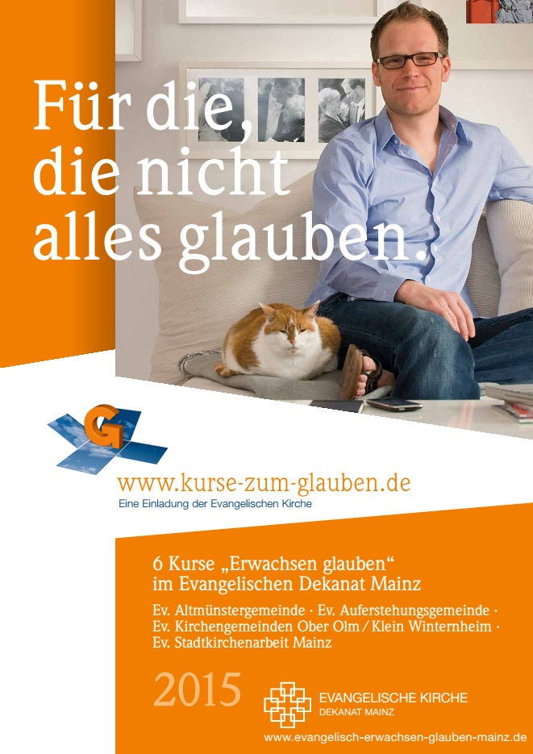
Sie können nach telefonischer Absprache das INFO-LEPORELLO auch als Printversion ab sofort im Büro der Ev. Stadtkirchenarbeit - auch in größerer Zahl - abholen.
Auch in allen ev. Gemeinden des Dekanates Mainz müßten diese ausliegen.
*
* Exkursion zur großen "Arnulf Rainer - Ausstellung" in das Museum Frieder Burda in Baden Baden
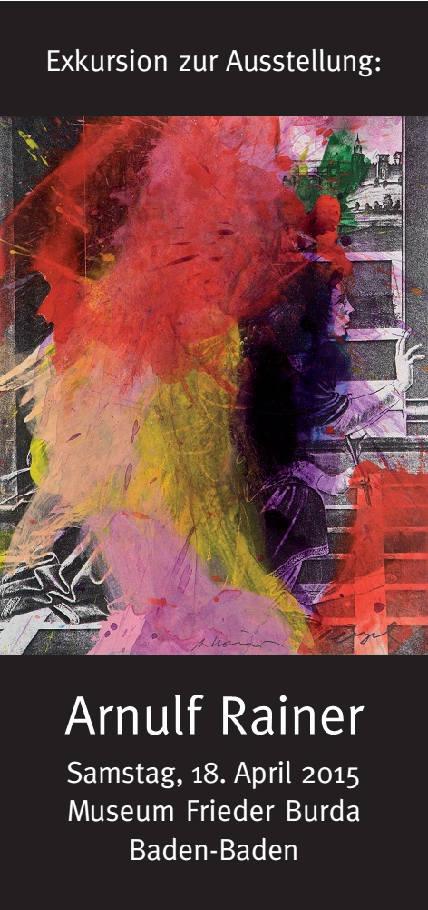
Wenn Sie auf diese obige Grafik-Fläche klicken, erhalten Sie Einblick
in sämtliche Informationen dieser Projekt-Info.
Diese gibt es auch in der Print-Version.
*
Ganztagesfahrt mit der Bahn mit eigener Sonder-Führung
HINWEIS: Dieses Ausstellungsprojekt lief zuvor in der ALBERTINA in Wien
... parallel zur Baden Badener-Ausstellung werden diverse Werke von Georg Baselitz im Museum Frieder Burda präsentiert
weitere AUSFÜHRLICHE Informationen: mainz-evangelisch-stadtkirchenarbeit.de/index/619
oder
auch durch Anklicken der obigen Grafik ( = BASIS-Information )
*
"Ev. Kirche auf der Hochzeitsmesse in der Rheingoldhalle Mainz"
Auch im Jahr 2015 wird die Ev. Kirche mit einem Stand der Ev. Stadtkirchenarbeit auf der Mainzer Hochzeitsmesse präsent sein.
Wie die Erfahrungen der letzten Jahre erkennen lassen, gibt es eine große "Nachfrage" nach dem Angebot von evangelischer Beratung und Seelsorge
rund um diesen wichtigen Tag im Leben der Paare. Der Termin der diesjährigen Messe ist das Wochenende Samstag, 17. und Sonntag, 18. Oktober 2015.
Weitere Informationen unter: mainz-evangelisch-stadtkirchenarbeit.de/index/400
RÜCKBLICK:
"Geheimnis Bild - Weltdeutung in Bildern"
jeweils an den Mittwochen der Vorlesungszeit - 18.15 Uhr - im Raum Philosophicum P 204 ( nicht 207 )
1. Veranstaltung am 29. Oktober 2014
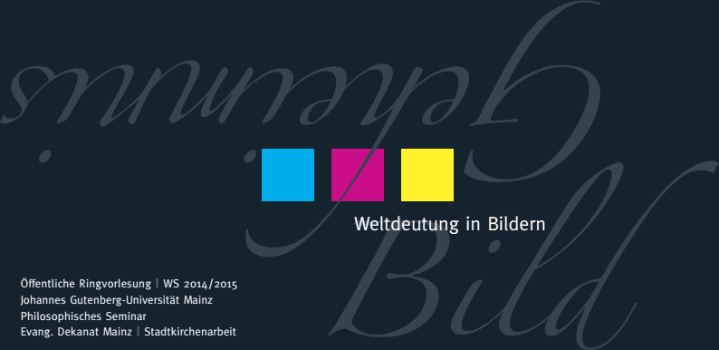
Sie erhalten Einblick in diese Informations-Broschüre, wenn Sie irgendwo in das Feld der oberen Grafik klicken.
Die letzte Vorlesung war
am Mittwoch, den 11. Februar 2015
18.15 Uhr - Raum P 204 - Philosophicum
Prof. Dr. Karl Böhmer
Musikgeschichte
Die Bibel im Notenbild der geistlichen Musik Bachs
Mit diesen Worten überraschte Pfr. Beier den Referenten und das sehr zahlreiche Publikum dieser letzten Ringvorlesungs-Sitzung nach seinem Dank für einen überaus detail-und kenntnisreichen Vortrag. Die kurze Irritation löste er dann auf mit der "Erklärung":
"Einen solchen Reichtum an Detail-Kenntnissen, sehr geehrter Herr Prof. Böhmer, können Sie nur in persönlichen Gesprächen mit Herrn Bach selbst in den letzten Tagen gewonnen haben."
Ja, es war ein FINALE GRANDIOSO.
Herzlichen Dank an Herrn Prof. Böhmer.
Angesichts der Fülle der eigentlich noch weiter gerne vom Referenten vorzutragenden Inhalte, die aber an der "Zeitgrenze" der Veranstaltung angekommen waren, schlug Pfr. Beier spontan eine ergänzende 2-teilige Veranstaltung zur h-Moll Messe vor. Viele der Anwesenden begrüßten diese Idee.
Der Referent erklärte sein grundsätzliche Bereitschaft dazu.
Vielleicht - hoffentlich läßt es sich konkret umsetzen.
Pfr. Beier und abschließend PD Dr Dr. Seit dankten allen Referenten der Öffentlichen Ringvorlesung, den zahlreichen interessierten Besuchern der 14 Vorlesungen und nicht zuletzt den wissenschaftlcihen Mitarbeitern des Lehrstuhls von Herrn Seit - insbesondere Herrn Joachim, der die Hauptlast der Organisation getragen und bravourös gemeistert hatte.
Auch ich danke herzlich meinem Projekt-Partner Herrn PD Dr. Dr. Seit und seinen wissenschaftlichen Mitarbeitern für die so erfeulich positive und erfolgreiche Kooperation.
Pfr. Rainer Beier
Ein Vorlesungsrückblick:
TOLLER VORTRAG !
Referent brachte sogar die "4. Dimension" in den Vorlesungsraum mit !
TOLLE RESONANZ: 115 Teilnehmende
Ein Höhepunkt der Vorlesungsreihe
am Mittwoch, den 21. Januar 2015 - Beginn: 18.15 Uhr
Raum P 204 - Philosophicum der Johannes Gutenberg Universität
*
Prof. Dr. Manfred Lehn
Mathematik
"Mehrdimensionale Körper"
mainz-evangelisch-stadtkirchenarbeit.de/index/615 (Projektbeschreibung)
+
mainz-evangelisch-stadtkirchenarbeit.de/index/616 (Terminübersicht mit Themen und Vortragenden)
HINWEIS:
Aktuelle Hinweise finden Sie auch auf der Homepage des Projektpartners: www.blogs.uni-mainz.de/fb05philosophie/
Bilder zur Bibel
Ausstellung mit Arbeiten von Walter Habdank
in der Mainzer Lutherkirche
WOHLBEHALTEN IN DER HABDANK-GALERIE
IN BERG AM STARNBERGER SEE ANGEKOMMEN
Am vergangenen Freitag, dem 9.Januar, konnte Pfr. Rainer Beier sämtliche Exponate unversehrt an Frau Friedgard Habdank in der Habdank-Galerie abgeben.
Nach einer kleinen "Abschiedsfeier" im Kreis der Mitarbeitenden des Projektes von den Holzschnittem, Ölgemälden und Druckstöcken in Mainz wurde am Mittwoch der Transporter
über die vielen Stufen des Kirchenzugangs der Lutherkirche hinab voll beladen, am Donnerstag erfolgte der Transport und am Freitag die Übergabe.
Allen Projekt-Mitarbeitenden vor Ort - insbesondere Pfr. Hoffmann-Schaefer, dem Vorbereitungskreis, allen Aufsichten, allen Auf-und Abbau-Helfenden, allen ReferentInnen und Musikern, sowie dem Kirchenvorstand sage ich herzlichen Dank für alle so positive Kooperation in dieser eindrücklichen Begegnung von "Kunst+Kirche" im Lutherdekadenthemenjahr BIBEL+BILD.
Frau Friedgard Habdank sagen wir als Ihre "Mainzer" Projekt-Partner von Herzen DANKESCHÖN für alle Begleitung und Förderung des Vorhabens, sowie der Ausleihe so vieler Exponate für die Lutherkirche.
Es war ein Erlebnis.
Pfarrer Rainer Beier

Durch Anklicken im Bereich der obigen Grafik erhalten Sie Einblick in das gesamte Veranstaltungs-INFO-Leporello.
.....................................................................................................................................................................................................................................................................................................................
von Sonntag, dem 2. November 2014
bis zum Dienstag, dem 6. Januar 2015
Eröffnung
war am 2. November um 14.00 Uhr
im Kontext des Dekanats-Reformationsgottesdienst 2014
in Anwesenheit von Frau Friedgard Habdank und Herrn Wowo Habdank
*
LETZTE BESICHTIGUNGSMÖGLICHKEIT DER AUSSTELLUNG:
am Sonntag, dem 4.Januar
vor und nach dem Gottesdienst ( s.o. )
.jpg)
von
Walter Habdank
Exponate:
Über 60 Holzschnitte mit biblischen Motiven, Ölgemälde; Druckstöcke, Kerzenständer und Original "Habdank-Bibeln" werden ab dem 2. November in der Mainzer Lutherkirche zu sehen sein.
Die Gesamtausstellung wird dann bis zum 7. Januar 2015 gezeigt.
Es wird 2 Hängungen in der Lutherkirche geben:
(A) Vom 2.November bis zum 1.Advent: Motive aus dem Alten Testament
(B) Vom 1.Advent bis zum Ende der Ausstellung ( 7.Januar 2014 ): Motive aus dem Neuen Testament
.jpg)
Zusätzliche Angebote für die Besucher u.a. :
+ 3 Original-Habdank-Bibeln
+ insgesamt 5 Original Druckstöcke von Walter Habdank
+ "Lese"-Ort ( mit Büchern zu künstlerischen Arbeiten von Walter Habdank )
+ Filmbeitrag " Künstlerportrait von Walter Habdank" aus dem Jahr 1986 - 45 Minuten
+ Powerpoint-Präsentation zur Geschichte der Lutherkirche
Im Begleitprogramm gab es auch 3 Veranstaltungen zur Geschichte und zu den Besonderheiten der Mainzer Lutherkirche geben. Als erste nach dem 2. Weltkrieg erstellte Kirche in Mainz
ist sie Teil des sogenannten "Notkirchenprogramms" ( Architekt Otto Bartning ) der Ev. Kirche Deutschlands nach dem 2. Weltkrieg.
Zur Besonderheit der Lutherkirche als "Notkirche" nach dem Nachkriegs-Wiederaufbauprogramms der Ev. Kirche Deutschland in der Grund-Konzeption des Architekten Otto Bartning bieten wir an:
Sie wurde im Jahre 1949 als erste Kirche nach dem 2.Weltkrieg in Mainz erbaut. Das im Inneren sichtbare Mauerwerk, aus Trümmersteinen zerstörter Altstadthäuser errichtet, erinnert exemplarisch daran. Beim Errichten der Kirche legte die Gemeinde kräftig Hand an. Ein Bauprogramm der Ev. Kirche in Deutschland nach der Konzeption des Architekten Otto Bartning ( 1883 – 1959 ), das 48 Nachkriegs-Serienkirchen ( sogenannte „Notkirchen“ ) schuf, ermöglichte auch hier in Mainz einen einfachen und doch beeindruckenden Kirchenbau. Otto Bartning war ein herausragender Architekt des 20. Jahrhunderts. Er gilt als wichtigster deutscher Kirchenbaumeister im protestantischen Bereich. Mit Walter Gropius entwickelte er die „Bauhaus-Idee“. Insgesamt wurden 150 Kirchen im In-und Ausland von ihm entworfen. Die Mainzer Lutherkirche wird im Inneren geprägt von dem schlichten, großen Holzkreuz im Altarraum, das die Erlösungstat Christi in den Mittelpunkt stellt. Helles Licht und warme Holzfarbtöne schaffen in der Kirche eine Atmosphäre der Geborgenheit. Diese Kirche stand und steht für die Solidarität der Menschen in Not.
Aktuell wird geprüft, ob die Bartning-„Notkirchen“ zum „Weltkulturerbe“ gehören sollen !
Unsere 3 Begleitveranstaltungen beleuchteten Ihre Architektur, Geschichte und aktuelle Bedeutung:
(1) „ So war es damals - bei Kirchenbau und Gemeinde“ Erzählabend von Zeitzeugen und Präsentation von Dokumenten über den Bau und das damalige Gemeindeleben
Donnerstag, 6. November 2014 – 18.30 Uhr
Zeitzeugen und Pfarrer Rainer Beier und Orts-Pfr. Ulrich Hoffmann-Schaefer, Moderation
(2) „Die Lutherkirche in Mainz – eine Kirche aus dem Baukasten?
Otto Bartnings Architektur zwischen Standardisierung und Individualität“
Dienstag, den 18.11.2014 – 18.30 Uhr
Dr. Sandra Wagner-Conzelmann, Berlin / Aachen ( Architektur- und Kunsthistorikerin, arbeitet aktuell an ihrer Habilitation über Otto Bartning )
(3)"Die Mainzer Lutherkirche – ein weltweit eindrückliches Beispiel von Otto Bartnings „Notkirchen“-Konzept im Kontext der Mainzer Baugeschichte"
Donnerstag, den 27. November – 18.30 Uhr
Dr. Katrin Nessel, Mainz (Abteilungsleiterin, Denkmalpflege der Stadt Mainz)Zu diesem Aspekt wird es nach aktuellster Planung 3 Vorträge im November 2014 geben:
Weitere Informationen auf der "Aktuellen Sonderseite" :
mainz-evangelisch-stadtkirchenarbeit.de/index/599
und:
www.habdank-walter.de/pages/de/willkommen.php
Aktueller Bearbeitungsstand diese Seite: November 2019 - pfr.b.